4 Prediction
Prerequisites
library("tidyverse")
library("lubridate")
library("stringr")
library("forcats")The packages modelr and broom are used to wrangle the results of linear regressions,
library("broom")
library("modelr")4.1 Loops in R
For more on looping and iteration in R see the R for Data Science chapter Iteration.
RStudio provides many features to help debugging, which will be useful in for loops and function: see this article for an example.
4.2 General Conditional Statements in R
See the R for Data Science section Conditional Execution for a more complete discussion of conditional execution.
If you are using conditional statements to assign values for data frame, see the dplyr functions if_else, recode, and case_when
4.3 Poll Predictions
Load the election polls and election results for 2008,
data("polls08", package = "qss")
glimpse(polls08)
#> Observations: 1,332
#> Variables: 5
#> $ state <chr> "AL", "AL", "AL", "AL", "AL", "AL", "AL", "AL", "AL",...
#> $ Pollster <chr> "SurveyUSA-2", "Capital Survey-2", "SurveyUSA-2", "Ca...
#> $ Obama <int> 36, 34, 35, 35, 39, 34, 36, 25, 35, 34, 37, 36, 36, 3...
#> $ McCain <int> 61, 54, 62, 55, 60, 64, 58, 52, 55, 47, 55, 51, 49, 5...
#> $ middate <date> 2008-10-27, 2008-10-15, 2008-10-08, 2008-10-06, 2008...data("pres08", package = "qss")
glimpse(pres08)
#> Observations: 51
#> Variables: 5
#> $ state.name <chr> "Alabama", "Alaska", "Arizona", "Arkansas", "Califo...
#> $ state <chr> "AL", "AK", "AZ", "AR", "CA", "CO", "CT", "DC", "DE...
#> $ Obama <int> 39, 38, 45, 39, 61, 54, 61, 92, 62, 51, 47, 72, 36,...
#> $ McCain <int> 60, 59, 54, 59, 37, 45, 38, 7, 37, 48, 52, 27, 62, ...
#> $ EV <int> 9, 3, 10, 6, 55, 9, 7, 3, 3, 27, 15, 4, 4, 21, 11, ...Compute Obama’s margin in polls and final election
polls08 <-
polls08 %>% mutate(margin = Obama - McCain)
pres08 <-
pres08 %>% mutate(margin = Obama - McCain)To work with dates, the R package lubridate makes wrangling them much easier. See the R for Data Science chapter Dates and Times.
The function ymd will convert character strings like year-month-day and more into dates, as long as the order is (year, month, day). See dmy, ymd, and others for other ways to convert strings to dates.
x <- ymd("2008-11-04")
y <- ymd("2008/9/1")
x - y
#> Time difference of 64 daysHowever, note that in polls08, the date middate is already a date object,
class(polls08$middate)
#> [1] "Date"The function read_csv by default will check character vectors to see if they have patterns that appear to be dates, and if so, will parse those columns as dates.
We’ll create a variable for election day
ELECTION_DAY <- ymd("2008-11-04")and add a new column to poll08 with the days to the election
polls08 <-
mutate(polls08, ELECTION_DAY - middate)Although the code in the chapter uses a for loop, there is no reason to do so. We can accomplish the same task by merging the election results data to the polling data by state.
polls_w_results <-
left_join(polls08,
select(pres08, state, elec_margin = margin),
by = "state") %>%
mutate(error = elec_margin - margin)
glimpse(polls_w_results)
#> Observations: 1,332
#> Variables: 9
#> $ state <chr> "AL", "AL", "AL", "AL", "AL", "AL", "...
#> $ Pollster <chr> "SurveyUSA-2", "Capital Survey-2", "S...
#> $ Obama <int> 36, 34, 35, 35, 39, 34, 36, 25, 35, 3...
#> $ McCain <int> 61, 54, 62, 55, 60, 64, 58, 52, 55, 4...
#> $ middate <date> 2008-10-27, 2008-10-15, 2008-10-08, ...
#> $ margin <int> -25, -20, -27, -20, -21, -30, -22, -2...
#> $ `ELECTION_DAY - middate` <time> 8 days, 20 days, 27 days, 29 days, 4...
#> $ elec_margin <int> -21, -21, -21, -21, -21, -21, -21, -2...
#> $ error <int> 4, -1, 6, -1, 0, 9, 1, 6, -1, -8, -3,...To get the last poll in each state, arrange and filter on middate
last_polls <-
polls_w_results %>%
arrange(state, desc(middate)) %>%
group_by(state) %>%
slice(1)
last_polls
#> # A tibble: 51 x 9
#> # Groups: state [51]
#> state Pollster Obama McCain middate margin
#> <chr> <chr> <int> <int> <date> <int>
#> 1 AK Research 2000-3 39 58 2008-10-29 -19
#> 2 AL SurveyUSA-2 36 61 2008-10-27 -25
#> 3 AR ARG-4 44 51 2008-10-29 -7
#> 4 AZ ARG-3 46 50 2008-10-29 -4
#> 5 CA SurveyUSA-3 60 36 2008-10-30 24
#> 6 CO ARG-3 52 45 2008-10-29 7
#> # ... with 45 more rows, and 3 more variables: `ELECTION_DAY -
#> # middate` <time>, elec_margin <int>, error <int>Challenge: Instead of using the last poll, use the average of polls in the last week? Last month? How do the margins on the polls change over the election period?
To simplify things for later, let’s define a function rmse which calculates the root mean squared error, as defined in the book. See the R for Data Science chapter Functions for more on writing functions.
rmse <- function(actual, pred) {
sqrt(mean( (actual - pred) ^ 2))
}Now we can use rmse() to calculate the RMSE for all the final polls:
rmse(last_polls$margin, last_polls$elec_margin)
#> [1] 5.88Or since we already have a variable error,
sqrt(mean(last_polls$error ^ 2))
#> [1] 5.88The mean prediction error is
mean(last_polls$error)
#> [1] 1.08This is slightly different than what is in the book due to the difference in the poll used as the final poll; many states have many polls on the last day.
I’ll choose bin widths of 1%, since that is fairly interpretable:
ggplot(last_polls, aes(x = error)) +
geom_histogram(binwidth = 1, boundary = 0)
The text uses bin widths of 5%:
ggplot(last_polls, aes(x = error)) +
geom_histogram(binwidth = 5, boundary = 0)
Challenge: What other ways could you visualize the results? How would you show all states? What about plotting the absolute or squared errors instead of the errors?
Challenge: What happens to prediction error if you average polls? Consider averaging back over time? What happens if you take the averages of the state poll average and average of all polls - does that improve prediction?
To create a scatter plots using the state abbreviations instead of points use geom_text instead of geom_point.
ggplot(last_polls, aes(x = margin, y = elec_margin, label = state)) +
geom_abline(color = "white", size = 2) +
geom_hline(yintercept = 0, color = "gray", size = 2) +
geom_vline(xintercept = 0, color = "gray", size = 2) +
geom_text() +
coord_fixed() +
labs(x = "Poll Results", y = "Actual Election Results")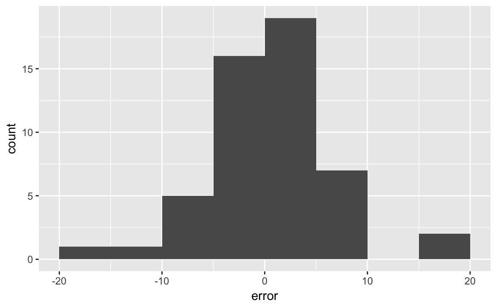
We can create a confusion matrix as follows. Create a new column classification which shows whether how the poll’s classification was related to the actual election outcome (“true positive”, “false positive”, “false negative”, “false positive”). If there were two outcomes, then we would use the function. But with more than two outcomes, it is easier to use the dplyr function .
last_polls <-
last_polls %>%
ungroup() %>%
mutate(classification =
case_when(
(.$margin > 0 & .$elec_margin > 0) ~ "true positive",
(.$margin > 0 & .$elec_margin < 0) ~ "false positive",
(.$margin < 0 & .$elec_margin < 0) ~ "true negative",
(.$margin < 0 & .$elec_margin > 0) ~ "false negative"
))You need to use . to refer to the data frame when using case_when within mutate(). Also, we needed to first use in order to remove the grouping variable so mutate will work.
Now simply count the number of polls in each category of classification:
last_polls %>%
group_by(classification) %>%
count()
#> # A tibble: 4 x 2
#> # Groups: classification [4]
#> classification n
#> <chr> <int>
#> 1 false negative 2
#> 2 false positive 1
#> 3 true negative 21
#> 4 true positive 27Which states were incorrectly predicted by the polls?
last_polls %>%
filter(classification %in% c("false positive", "false negative")) %>%
select(state, margin, elec_margin, classification) %>%
arrange(desc(elec_margin))
#> # A tibble: 3 x 4
#> state margin elec_margin classification
#> <chr> <int> <int> <chr>
#> 1 IN -5 1 false negative
#> 2 NC -1 1 false negative
#> 3 MO 1 -1 false positiveWhat was the difference in the poll prediction of electoral votes and actual electoral votes. We hadn’t included the variable EV when we first merged, but that’s no problem, we’ll just merge again in order to grab that variable:
last_polls %>%
left_join(select(pres08, state, EV), by = "state") %>%
summarise(EV_pred = sum( (margin > 0) * EV),
EV_actual = sum( (elec_margin > 0) * EV))
#> # A tibble: 1 x 2
#> EV_pred EV_actual
#> <int> <int>
#> 1 349 364data("pollsUS08", package = "qss")pollsUS08 <- mutate(pollsUS08, DaysToElection = ELECTION_DAY - middate)We’ll produce the seven-day averages slightly differently than the method used in the text. For all dates in the data, we’ll calculate the moving average.
all_dates <- seq(min(polls08$middate), ELECTION_DAY,
by = "days")
# Number of poll days to use
POLL_DAYS <- 7
pop_vote_avg <- vector(length(all_dates), mode = "list")
for (i in seq_along(all_dates)) {
date <- all_dates[i]
# summarise the seven day
week_data <-
pollsUS08 %>%
filter(as.integer(middate - date) <= 0,
as.integer(middate - date) > -POLL_DAYS) %>%
summarise(Obama = mean(Obama, na.rm = TRUE),
McCain = mean(McCain, na.rm = TRUE))
# add date for the observation
week_data$date <- date
pop_vote_avg[[i]] <- week_data
}
pop_vote_avg <- bind_rows(pop_vote_avg)It is easier to plot this if the data are tidy, with Obama and McCain as categories of a column candidate.
pop_vote_avg_tidy <-
pop_vote_avg %>%
gather(candidate, share, -date, na.rm = TRUE)
pop_vote_avg_tidy
#> date candidate share
#> 9 2008-01-09 Obama 49.0
#> 10 2008-01-10 Obama 46.0
#> 11 2008-01-11 Obama 45.0
#> 12 2008-01-12 Obama 45.0
#> 13 2008-01-13 Obama 45.0
#> 14 2008-01-14 Obama 45.0
#> 15 2008-01-15 Obama 45.0
#> 16 2008-01-16 Obama 44.6
#> 17 2008-01-17 Obama 45.4
#> 18 2008-01-18 Obama 46.0
#> 19 2008-01-19 Obama 47.0
#> 20 2008-01-20 Obama 45.0
#> 21 2008-01-21 Obama 44.2
#> 22 2008-01-22 Obama 44.2
#> 23 2008-01-23 Obama 43.3
#> 24 2008-01-24 Obama 41.5
#> 25 2008-01-25 Obama 41.5
#> 26 2008-01-26 Obama 41.5
#> 27 2008-01-27 Obama 42.0
#> 30 2008-01-30 Obama 46.0
#> 31 2008-01-31 Obama 46.0
#> 32 2008-02-01 Obama 45.8
#> 33 2008-02-02 Obama 47.0
#> 34 2008-02-03 Obama 47.2
#> 35 2008-02-04 Obama 46.7
#> 36 2008-02-05 Obama 46.6
#> 37 2008-02-06 Obama 47.0
#> 38 2008-02-07 Obama 47.0
#> 39 2008-02-08 Obama 47.5
#> 40 2008-02-09 Obama 46.1
#> 41 2008-02-10 Obama 45.8
#> 42 2008-02-11 Obama 46.7
#> 43 2008-02-12 Obama 46.8
#> 44 2008-02-13 Obama 46.7
#> 45 2008-02-14 Obama 46.7
#> 46 2008-02-15 Obama 46.6
#> 47 2008-02-16 Obama 47.2
#> 48 2008-02-17 Obama 47.0
#> 49 2008-02-18 Obama 46.6
#> 50 2008-02-19 Obama 46.4
#> 51 2008-02-20 Obama 47.0
#> 52 2008-02-21 Obama 46.5
#> 53 2008-02-22 Obama 47.4
#> 54 2008-02-23 Obama 47.1
#> 55 2008-02-24 Obama 47.2
#> 56 2008-02-25 Obama 46.6
#> 57 2008-02-26 Obama 46.7
#> 58 2008-02-27 Obama 46.3
#> 59 2008-02-28 Obama 46.8
#> 60 2008-02-29 Obama 45.3
#> 61 2008-03-01 Obama 44.8
#> 62 2008-03-02 Obama 44.8
#> 63 2008-03-03 Obama 45.0
#> 64 2008-03-04 Obama 45.0
#> 65 2008-03-05 Obama 45.2
#> 66 2008-03-06 Obama 45.2
#> 67 2008-03-07 Obama 45.8
#> 68 2008-03-08 Obama 44.6
#> 69 2008-03-09 Obama 45.1
#> 70 2008-03-10 Obama 45.1
#> 71 2008-03-11 Obama 45.2
#> 72 2008-03-12 Obama 44.8
#> 73 2008-03-13 Obama 44.0
#> 74 2008-03-14 Obama 44.0
#> 75 2008-03-15 Obama 45.3
#> 76 2008-03-16 Obama 44.3
#> 77 2008-03-17 Obama 44.9
#> 78 2008-03-18 Obama 44.6
#> 79 2008-03-19 Obama 44.0
#> 80 2008-03-20 Obama 44.1
#> 81 2008-03-21 Obama 44.8
#> 82 2008-03-22 Obama 44.0
#> 83 2008-03-23 Obama 43.9
#> 84 2008-03-24 Obama 43.2
#> 85 2008-03-25 Obama 43.1
#> 86 2008-03-26 Obama 43.6
#> 87 2008-03-27 Obama 43.5
#> 88 2008-03-28 Obama 42.7
#> 89 2008-03-29 Obama 42.7
#> 90 2008-03-30 Obama 43.5
#> 91 2008-03-31 Obama 43.6
#> 92 2008-04-01 Obama 43.5
#> 93 2008-04-02 Obama 43.3
#> 94 2008-04-03 Obama 44.0
#> 95 2008-04-04 Obama 44.2
#> 96 2008-04-05 Obama 44.3
#> 97 2008-04-06 Obama 43.5
#> 98 2008-04-07 Obama 43.6
#> 99 2008-04-08 Obama 42.7
#> 100 2008-04-09 Obama 43.2
#> 101 2008-04-10 Obama 43.2
#> 102 2008-04-11 Obama 43.0
#> 103 2008-04-12 Obama 42.8
#> 104 2008-04-13 Obama 42.8
#> 105 2008-04-14 Obama 43.0
#> 106 2008-04-15 Obama 43.9
#> 107 2008-04-16 Obama 44.7
#> 108 2008-04-17 Obama 44.2
#> 109 2008-04-18 Obama 44.6
#> 110 2008-04-19 Obama 45.1
#> 111 2008-04-20 Obama 45.2
#> 112 2008-04-21 Obama 44.7
#> 113 2008-04-22 Obama 45.0
#> 114 2008-04-23 Obama 44.2
#> 115 2008-04-24 Obama 45.0
#> 116 2008-04-25 Obama 45.7
#> 117 2008-04-26 Obama 45.2
#> 118 2008-04-27 Obama 45.4
#> 119 2008-04-28 Obama 45.7
#> 120 2008-04-29 Obama 45.4
#> 121 2008-04-30 Obama 45.4
#> 122 2008-05-01 Obama 45.1
#> 123 2008-05-02 Obama 45.3
#> 124 2008-05-03 Obama 45.3
#> 125 2008-05-04 Obama 45.4
#> 126 2008-05-05 Obama 45.1
#> 127 2008-05-06 Obama 45.2
#> 128 2008-05-07 Obama 45.4
#> 129 2008-05-08 Obama 45.7
#> 130 2008-05-09 Obama 45.1
#> 131 2008-05-10 Obama 46.4
#> 132 2008-05-11 Obama 46.5
#> 133 2008-05-12 Obama 47.8
#> 134 2008-05-13 Obama 47.9
#> 135 2008-05-14 Obama 46.0
#> 136 2008-05-15 Obama 46.0
#> 137 2008-05-16 Obama 45.7
#> 138 2008-05-17 Obama 45.3
#> 139 2008-05-18 Obama 45.1
#> 140 2008-05-19 Obama 45.2
#> 141 2008-05-20 Obama 44.0
#> 142 2008-05-21 Obama 45.7
#> 143 2008-05-22 Obama 45.6
#> 144 2008-05-23 Obama 45.8
#> 145 2008-05-24 Obama 45.4
#> 146 2008-05-25 Obama 45.4
#> 147 2008-05-26 Obama 45.3
#> 148 2008-05-27 Obama 44.1
#> 149 2008-05-28 Obama 43.9
#> 150 2008-05-29 Obama 43.9
#> 151 2008-05-30 Obama 43.2
#> 152 2008-05-31 Obama 44.0
#> 153 2008-06-01 Obama 44.5
#> 154 2008-06-02 Obama 44.5
#> 155 2008-06-03 Obama 46.5
#> 156 2008-06-04 Obama 46.8
#> 157 2008-06-05 Obama 46.3
#> 158 2008-06-06 Obama 47.1
#> 159 2008-06-07 Obama 46.9
#> 160 2008-06-08 Obama 47.2
#> 161 2008-06-09 Obama 46.9
#> 162 2008-06-10 Obama 46.1
#> 163 2008-06-11 Obama 45.8
#> 164 2008-06-12 Obama 46.4
#> 165 2008-06-13 Obama 46.2
#> 166 2008-06-14 Obama 46.0
#> 167 2008-06-15 Obama 45.3
#> 168 2008-06-16 Obama 44.4
#> 169 2008-06-17 Obama 45.4
#> 170 2008-06-18 Obama 45.4
#> 171 2008-06-19 Obama 44.5
#> 172 2008-06-20 Obama 44.2
#> 173 2008-06-21 Obama 44.9
#> 174 2008-06-22 Obama 44.9
#> 175 2008-06-23 Obama 45.6
#> 176 2008-06-24 Obama 45.4
#> 177 2008-06-25 Obama 45.4
#> 178 2008-06-26 Obama 46.3
#> 179 2008-06-27 Obama 46.6
#> 180 2008-06-28 Obama 46.5
#> 181 2008-06-29 Obama 46.4
#> 182 2008-06-30 Obama 46.7
#> 183 2008-07-01 Obama 46.4
#> 184 2008-07-02 Obama 46.4
#> 185 2008-07-03 Obama 46.4
#> 186 2008-07-04 Obama 46.4
#> 187 2008-07-05 Obama 45.8
#> 188 2008-07-06 Obama 45.8
#> 189 2008-07-07 Obama 45.0
#> 190 2008-07-08 Obama 45.2
#> 191 2008-07-09 Obama 44.6
#> 192 2008-07-10 Obama 45.2
#> 193 2008-07-11 Obama 45.1
#> 194 2008-07-12 Obama 45.1
#> 195 2008-07-13 Obama 45.1
#> 196 2008-07-14 Obama 45.3
#> 197 2008-07-15 Obama 45.9
#> 198 2008-07-16 Obama 46.1
#> 199 2008-07-17 Obama 45.5
#> 200 2008-07-18 Obama 45.5
#> 201 2008-07-19 Obama 45.2
#> 202 2008-07-20 Obama 45.4
#> 203 2008-07-21 Obama 45.4
#> 204 2008-07-22 Obama 44.6
#> 205 2008-07-23 Obama 45.3
#> 206 2008-07-24 Obama 45.8
#> 207 2008-07-25 Obama 45.8
#> 208 2008-07-26 Obama 46.3
#> 209 2008-07-27 Obama 46.5
#> 210 2008-07-28 Obama 46.6
#> 211 2008-07-29 Obama 47.0
#> 212 2008-07-30 Obama 47.4
#> 213 2008-07-31 Obama 46.6
#> 214 2008-08-01 Obama 46.4
#> 215 2008-08-02 Obama 45.2
#> 216 2008-08-03 Obama 45.0
#> 217 2008-08-04 Obama 44.8
#> 218 2008-08-05 Obama 44.8
#> 219 2008-08-06 Obama 44.5
#> 220 2008-08-07 Obama 45.0
#> 221 2008-08-08 Obama 45.2
#> 222 2008-08-09 Obama 45.8
#> 223 2008-08-10 Obama 45.9
#> 224 2008-08-11 Obama 46.0
#> 225 2008-08-12 Obama 45.7
#> 226 2008-08-13 Obama 45.6
#> 227 2008-08-14 Obama 45.7
#> 228 2008-08-15 Obama 44.9
#> 229 2008-08-16 Obama 45.0
#> 230 2008-08-17 Obama 45.0
#> 231 2008-08-18 Obama 44.8
#> 232 2008-08-19 Obama 44.3
#> 233 2008-08-20 Obama 44.6
#> 234 2008-08-21 Obama 44.2
#> 235 2008-08-22 Obama 44.5
#> 236 2008-08-23 Obama 45.0
#> 237 2008-08-24 Obama 44.8
#> 238 2008-08-25 Obama 44.5
#> 239 2008-08-26 Obama 45.6
#> 240 2008-08-27 Obama 45.4
#> 241 2008-08-28 Obama 46.0
#> 242 2008-08-29 Obama 46.3
#> 243 2008-08-30 Obama 46.8
#> 244 2008-08-31 Obama 46.8
#> 245 2008-09-01 Obama 47.5
#> 246 2008-09-02 Obama 46.9
#> 247 2008-09-03 Obama 46.9
#> 248 2008-09-04 Obama 46.7
#> 249 2008-09-05 Obama 46.5
#> 250 2008-09-06 Obama 46.1
#> 251 2008-09-07 Obama 45.7
#> 252 2008-09-08 Obama 45.2
#> 253 2008-09-09 Obama 45.4
#> 254 2008-09-10 Obama 45.0
#> 255 2008-09-11 Obama 45.0
#> 256 2008-09-12 Obama 45.2
#> 257 2008-09-13 Obama 45.3
#> 258 2008-09-14 Obama 45.5
#> 259 2008-09-15 Obama 46.0
#> 260 2008-09-16 Obama 45.9
#> 261 2008-09-17 Obama 46.4
#> 262 2008-09-18 Obama 46.8
#> 263 2008-09-19 Obama 46.8
#> 264 2008-09-20 Obama 46.9
#> 265 2008-09-21 Obama 47.5
#> 266 2008-09-22 Obama 47.6
#> 267 2008-09-23 Obama 47.5
#> 268 2008-09-24 Obama 47.5
#> 269 2008-09-25 Obama 47.5
#> 270 2008-09-26 Obama 47.6
#> 271 2008-09-27 Obama 47.9
#> 272 2008-09-28 Obama 47.8
#> 273 2008-09-29 Obama 48.0
#> 274 2008-09-30 Obama 48.6
#> 275 2008-10-01 Obama 48.8
#> 276 2008-10-02 Obama 48.8
#> 277 2008-10-03 Obama 49.1
#> 278 2008-10-04 Obama 49.1
#> 279 2008-10-05 Obama 49.0
#> 280 2008-10-06 Obama 49.4
#> 281 2008-10-07 Obama 49.2
#> 282 2008-10-08 Obama 48.9
#> 283 2008-10-09 Obama 49.2
#> 284 2008-10-10 Obama 49.3
#> 285 2008-10-11 Obama 49.3
#> 286 2008-10-12 Obama 49.9
#> 287 2008-10-13 Obama 49.8
#> 288 2008-10-14 Obama 49.7
#> 289 2008-10-15 Obama 50.3
#> 290 2008-10-16 Obama 49.9
#> 291 2008-10-17 Obama 49.7
#> 292 2008-10-18 Obama 49.8
#> 293 2008-10-19 Obama 49.4
#> 294 2008-10-20 Obama 49.6
#> 295 2008-10-21 Obama 50.0
#> 296 2008-10-22 Obama 49.9
#> 297 2008-10-23 Obama 50.0
#> 298 2008-10-24 Obama 50.2
#> 299 2008-10-25 Obama 50.3
#> 300 2008-10-26 Obama 50.4
#> 301 2008-10-27 Obama 50.4
#> 302 2008-10-28 Obama 50.2
#> 303 2008-10-29 Obama 50.1
#> 304 2008-10-30 Obama 50.1
#> 305 2008-10-31 Obama 50.4
#> 306 2008-11-01 Obama 50.6
#> 307 2008-11-02 Obama 51.0
#> 308 2008-11-03 Obama 51.1
#> 309 2008-11-04 Obama 51.3
#> 318 2008-01-09 McCain 48.0
#> 319 2008-01-10 McCain 46.5
#> 320 2008-01-11 McCain 45.0
#> 321 2008-01-12 McCain 45.4
#> 322 2008-01-13 McCain 45.4
#> 323 2008-01-14 McCain 45.4
#> 324 2008-01-15 McCain 45.4
#> 325 2008-01-16 McCain 43.4
#> 326 2008-01-17 McCain 41.8
#> 327 2008-01-18 McCain 41.8
#> 328 2008-01-19 McCain 37.5
#> 329 2008-01-20 McCain 39.0
#> 330 2008-01-21 McCain 39.8
#> 331 2008-01-22 McCain 39.8
#> 332 2008-01-23 McCain 40.3
#> 333 2008-01-24 McCain 42.0
#> 334 2008-01-25 McCain 42.0
#> 335 2008-01-26 McCain 42.0
#> 336 2008-01-27 McCain 42.0
#> 339 2008-01-30 McCain 46.3
#> 340 2008-01-31 McCain 46.3
#> 341 2008-02-01 McCain 45.5
#> 342 2008-02-02 McCain 45.2
#> 343 2008-02-03 McCain 44.5
#> 344 2008-02-04 McCain 43.6
#> 345 2008-02-05 McCain 43.5
#> 346 2008-02-06 McCain 41.8
#> 347 2008-02-07 McCain 41.8
#> 348 2008-02-08 McCain 41.5
#> 349 2008-02-09 McCain 41.3
#> 350 2008-02-10 McCain 41.3
#> 351 2008-02-11 McCain 41.5
#> 352 2008-02-12 McCain 41.2
#> 353 2008-02-13 McCain 41.5
#> 354 2008-02-14 McCain 41.5
#> 355 2008-02-15 McCain 41.1
#> 356 2008-02-16 McCain 40.4
#> 357 2008-02-17 McCain 40.8
#> 358 2008-02-18 McCain 41.2
#> 359 2008-02-19 McCain 41.9
#> 360 2008-02-20 McCain 42.0
#> 361 2008-02-21 McCain 42.5
#> 362 2008-02-22 McCain 42.6
#> 363 2008-02-23 McCain 43.4
#> 364 2008-02-24 McCain 43.4
#> 365 2008-02-25 McCain 44.0
#> 366 2008-02-26 McCain 44.1
#> 367 2008-02-27 McCain 44.1
#> 368 2008-02-28 McCain 43.9
#> 369 2008-02-29 McCain 45.4
#> 370 2008-03-01 McCain 44.6
#> 371 2008-03-02 McCain 44.6
#> 372 2008-03-03 McCain 43.0
#> 373 2008-03-04 McCain 44.5
#> 374 2008-03-05 McCain 44.6
#> 375 2008-03-06 McCain 44.6
#> 376 2008-03-07 McCain 43.8
#> 377 2008-03-08 McCain 45.4
#> 378 2008-03-09 McCain 45.0
#> 379 2008-03-10 McCain 45.0
#> 380 2008-03-11 McCain 44.6
#> 381 2008-03-12 McCain 44.6
#> 382 2008-03-13 McCain 44.8
#> 383 2008-03-14 McCain 45.0
#> 384 2008-03-15 McCain 45.4
#> 385 2008-03-16 McCain 46.3
#> 386 2008-03-17 McCain 45.9
#> 387 2008-03-18 McCain 45.6
#> 388 2008-03-19 McCain 44.3
#> 389 2008-03-20 McCain 44.7
#> 390 2008-03-21 McCain 44.0
#> 391 2008-03-22 McCain 43.4
#> 392 2008-03-23 McCain 43.0
#> 393 2008-03-24 McCain 44.0
#> 394 2008-03-25 McCain 44.0
#> 395 2008-03-26 McCain 45.8
#> 396 2008-03-27 McCain 44.7
#> 397 2008-03-28 McCain 45.6
#> 398 2008-03-29 McCain 45.6
#> 399 2008-03-30 McCain 45.4
#> 400 2008-03-31 McCain 45.0
#> 401 2008-04-01 McCain 45.5
#> 402 2008-04-02 McCain 44.5
#> 403 2008-04-03 McCain 45.8
#> 404 2008-04-04 McCain 45.4
#> 405 2008-04-05 McCain 45.5
#> 406 2008-04-06 McCain 45.8
#> 407 2008-04-07 McCain 45.4
#> 408 2008-04-08 McCain 43.2
#> 409 2008-04-09 McCain 43.6
#> 410 2008-04-10 McCain 43.6
#> 411 2008-04-11 McCain 42.7
#> 412 2008-04-12 McCain 42.2
#> 413 2008-04-13 McCain 42.6
#> 414 2008-04-14 McCain 42.6
#> 415 2008-04-15 McCain 43.7
#> 416 2008-04-16 McCain 43.9
#> 417 2008-04-17 McCain 44.4
#> 418 2008-04-18 McCain 45.7
#> 419 2008-04-19 McCain 45.3
#> 420 2008-04-20 McCain 44.2
#> 421 2008-04-21 McCain 44.5
#> 422 2008-04-22 McCain 44.5
#> 423 2008-04-23 McCain 44.2
#> 424 2008-04-24 McCain 43.9
#> 425 2008-04-25 McCain 44.0
#> 426 2008-04-26 McCain 43.8
#> 427 2008-04-27 McCain 44.6
#> 428 2008-04-28 McCain 44.4
#> 429 2008-04-29 McCain 44.9
#> 430 2008-04-30 McCain 44.9
#> 431 2008-05-01 McCain 44.6
#> 432 2008-05-02 McCain 44.0
#> 433 2008-05-03 McCain 44.3
#> 434 2008-05-04 McCain 44.5
#> 435 2008-05-05 McCain 44.1
#> 436 2008-05-06 McCain 43.3
#> 437 2008-05-07 McCain 43.4
#> 438 2008-05-08 McCain 43.7
#> 439 2008-05-09 McCain 44.0
#> 440 2008-05-10 McCain 43.1
#> 441 2008-05-11 McCain 43.2
#> 442 2008-05-12 McCain 43.3
#> 443 2008-05-13 McCain 44.1
#> 444 2008-05-14 McCain 43.4
#> 445 2008-05-15 McCain 43.0
#> 446 2008-05-16 McCain 43.0
#> 447 2008-05-17 McCain 42.9
#> 448 2008-05-18 McCain 42.6
#> 449 2008-05-19 McCain 42.9
#> 450 2008-05-20 McCain 41.8
#> 451 2008-05-21 McCain 42.6
#> 452 2008-05-22 McCain 43.2
#> 453 2008-05-23 McCain 44.1
#> 454 2008-05-24 McCain 44.9
#> 455 2008-05-25 McCain 44.9
#> 456 2008-05-26 McCain 45.0
#> 457 2008-05-27 McCain 45.5
#> 458 2008-05-28 McCain 45.4
#> 459 2008-05-29 McCain 45.4
#> 460 2008-05-30 McCain 45.0
#> 461 2008-05-31 McCain 44.7
#> 462 2008-06-01 McCain 44.4
#> 463 2008-06-02 McCain 44.4
#> 464 2008-06-03 McCain 44.2
#> 465 2008-06-04 McCain 44.5
#> 466 2008-06-05 McCain 44.0
#> 467 2008-06-06 McCain 43.8
#> 468 2008-06-07 McCain 43.9
#> 469 2008-06-08 McCain 43.4
#> 470 2008-06-09 McCain 42.5
#> 471 2008-06-10 McCain 41.5
#> 472 2008-06-11 McCain 40.9
#> 473 2008-06-12 McCain 41.2
#> 474 2008-06-13 McCain 41.2
#> 475 2008-06-14 McCain 40.6
#> 476 2008-06-15 McCain 41.0
#> 477 2008-06-16 McCain 40.9
#> 478 2008-06-17 McCain 41.7
#> 479 2008-06-18 McCain 41.1
#> 480 2008-06-19 McCain 40.8
#> 481 2008-06-20 McCain 40.5
#> 482 2008-06-21 McCain 40.6
#> 483 2008-06-22 McCain 40.2
#> 484 2008-06-23 McCain 40.7
#> 485 2008-06-24 McCain 40.9
#> 486 2008-06-25 McCain 41.3
#> 487 2008-06-26 McCain 41.6
#> 488 2008-06-27 McCain 41.7
#> 489 2008-06-28 McCain 41.9
#> 490 2008-06-29 McCain 41.8
#> 491 2008-06-30 McCain 42.0
#> 492 2008-07-01 McCain 41.3
#> 493 2008-07-02 McCain 41.3
#> 494 2008-07-03 McCain 41.3
#> 495 2008-07-04 McCain 41.3
#> 496 2008-07-05 McCain 41.4
#> 497 2008-07-06 McCain 41.4
#> 498 2008-07-07 McCain 40.8
#> 499 2008-07-08 McCain 41.8
#> 500 2008-07-09 McCain 41.4
#> 501 2008-07-10 McCain 41.4
#> 502 2008-07-11 McCain 41.0
#> 503 2008-07-12 McCain 41.3
#> 504 2008-07-13 McCain 41.3
#> 505 2008-07-14 McCain 41.5
#> 506 2008-07-15 McCain 42.2
#> 507 2008-07-16 McCain 41.9
#> 508 2008-07-17 McCain 42.1
#> 509 2008-07-18 McCain 43.3
#> 510 2008-07-19 McCain 42.8
#> 511 2008-07-20 McCain 42.4
#> 512 2008-07-21 McCain 42.6
#> 513 2008-07-22 McCain 41.3
#> 514 2008-07-23 McCain 41.7
#> 515 2008-07-24 McCain 41.7
#> 516 2008-07-25 McCain 41.3
#> 517 2008-07-26 McCain 41.7
#> 518 2008-07-27 McCain 42.1
#> 519 2008-07-28 McCain 41.6
#> 520 2008-07-29 McCain 42.2
#> 521 2008-07-30 McCain 43.0
#> 522 2008-07-31 McCain 42.9
#> 523 2008-08-01 McCain 43.1
#> 524 2008-08-02 McCain 41.5
#> 525 2008-08-03 McCain 41.1
#> 526 2008-08-04 McCain 41.2
#> 527 2008-08-05 McCain 41.3
#> 528 2008-08-06 McCain 40.7
#> 529 2008-08-07 McCain 40.7
#> 530 2008-08-08 McCain 40.8
#> 531 2008-08-09 McCain 42.0
#> 532 2008-08-10 McCain 42.0
#> 533 2008-08-11 McCain 42.8
#> 534 2008-08-12 McCain 43.0
#> 535 2008-08-13 McCain 43.6
#> 536 2008-08-14 McCain 43.8
#> 537 2008-08-15 McCain 43.8
#> 538 2008-08-16 McCain 43.7
#> 539 2008-08-17 McCain 43.6
#> 540 2008-08-18 McCain 43.4
#> 541 2008-08-19 McCain 42.7
#> 542 2008-08-20 McCain 42.9
#> 543 2008-08-21 McCain 42.5
#> 544 2008-08-22 McCain 42.5
#> 545 2008-08-23 McCain 43.1
#> 546 2008-08-24 McCain 43.1
#> 547 2008-08-25 McCain 42.5
#> 548 2008-08-26 McCain 43.8
#> 549 2008-08-27 McCain 43.5
#> 550 2008-08-28 McCain 43.6
#> 551 2008-08-29 McCain 44.1
#> 552 2008-08-30 McCain 43.1
#> 553 2008-08-31 McCain 42.7
#> 554 2008-09-01 McCain 43.2
#> 555 2008-09-02 McCain 42.5
#> 556 2008-09-03 McCain 42.5
#> 557 2008-09-04 McCain 42.5
#> 558 2008-09-05 McCain 42.8
#> 559 2008-09-06 McCain 44.3
#> 560 2008-09-07 McCain 45.5
#> 561 2008-09-08 McCain 45.3
#> 562 2008-09-09 McCain 46.2
#> 563 2008-09-10 McCain 46.3
#> 564 2008-09-11 McCain 46.5
#> 565 2008-09-12 McCain 46.3
#> 566 2008-09-13 McCain 45.7
#> 567 2008-09-14 McCain 45.5
#> 568 2008-09-15 McCain 45.7
#> 569 2008-09-16 McCain 45.5
#> 570 2008-09-17 McCain 45.6
#> 571 2008-09-18 McCain 45.5
#> 572 2008-09-19 McCain 45.2
#> 573 2008-09-20 McCain 45.0
#> 574 2008-09-21 McCain 45.0
#> 575 2008-09-22 McCain 44.5
#> 576 2008-09-23 McCain 44.4
#> 577 2008-09-24 McCain 44.4
#> 578 2008-09-25 McCain 44.3
#> 579 2008-09-26 McCain 44.1
#> 580 2008-09-27 McCain 44.2
#> 581 2008-09-28 McCain 43.6
#> 582 2008-09-29 McCain 43.8
#> 583 2008-09-30 McCain 43.5
#> 584 2008-10-01 McCain 43.4
#> 585 2008-10-02 McCain 43.2
#> 586 2008-10-03 McCain 43.2
#> 587 2008-10-04 McCain 43.0
#> 588 2008-10-05 McCain 43.0
#> 589 2008-10-06 McCain 43.0
#> 590 2008-10-07 McCain 43.1
#> 591 2008-10-08 McCain 42.5
#> 592 2008-10-09 McCain 42.5
#> 593 2008-10-10 McCain 42.3
#> 594 2008-10-11 McCain 42.2
#> 595 2008-10-12 McCain 42.0
#> 596 2008-10-13 McCain 41.9
#> 597 2008-10-14 McCain 42.0
#> 598 2008-10-15 McCain 42.5
#> 599 2008-10-16 McCain 42.7
#> 600 2008-10-17 McCain 42.8
#> 601 2008-10-18 McCain 43.0
#> 602 2008-10-19 McCain 43.1
#> 603 2008-10-20 McCain 42.9
#> 604 2008-10-21 McCain 42.9
#> 605 2008-10-22 McCain 42.5
#> 606 2008-10-23 McCain 42.5
#> 607 2008-10-24 McCain 42.6
#> 608 2008-10-25 McCain 42.4
#> 609 2008-10-26 McCain 42.6
#> 610 2008-10-27 McCain 42.8
#> 611 2008-10-28 McCain 43.0
#> 612 2008-10-29 McCain 43.3
#> 613 2008-10-30 McCain 43.4
#> 614 2008-10-31 McCain 43.7
#> 615 2008-11-01 McCain 44.0
#> 616 2008-11-02 McCain 44.2
#> 617 2008-11-03 McCain 44.2
#> 618 2008-11-04 McCain 44.2ggplot(pop_vote_avg_tidy, aes(x = date, y = share,
colour = fct_reorder2(candidate, date, share))) +
geom_point() +
geom_line() +
scale_colour_manual("Candidate",
values = c(Obama = "blue", McCain = "red"))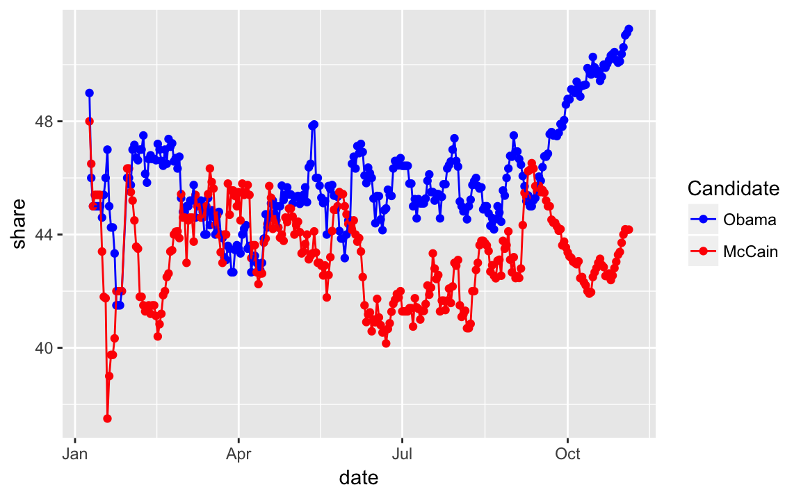
Challenge read R for Data Science chapter Iteration and use the function map_df instead of a for loop.
The 7-day average is similar to the simple method used by Real Clear Politics. The RCP average is simply the average of all polls in their data for the last seven days. Sites like 538 and the Huffpost Pollster, on the other hand, also use what amounts to averaging polls, but using more sophisticated statistical methods to assign different weights to different polls.
Challenge Why do we need to use different polls for the popular vote data? Why not simply average all the state polls? What would you have to do? Would the overall popular vote be useful in predicting state-level polling, or vice-versa? How would you use them?
4.4 Linear Regression
4.4.1 Facial Appearance and Election Outcomes
Load the face dataset:
data("face", package = "qss")Add Democrat and Republican vote shares, and the difference in shares:
face <- mutate(face,
d.share = d.votes / (d.votes + r.votes),
r.share = r.votes / (d.votes + r.votes),
diff.share = d.share - r.share)Plot facial competence vs. vote share:
ggplot(face, aes(x = d.comp, y = diff.share, colour = w.party)) +
geom_ref_line(h = 0) +
geom_point() +
scale_colour_manual("Winning\nParty",
values = c(D = "blue", R = "red")) +
labs(x = "Competence scores for Democrats",
y = "Democratic margin in vote share")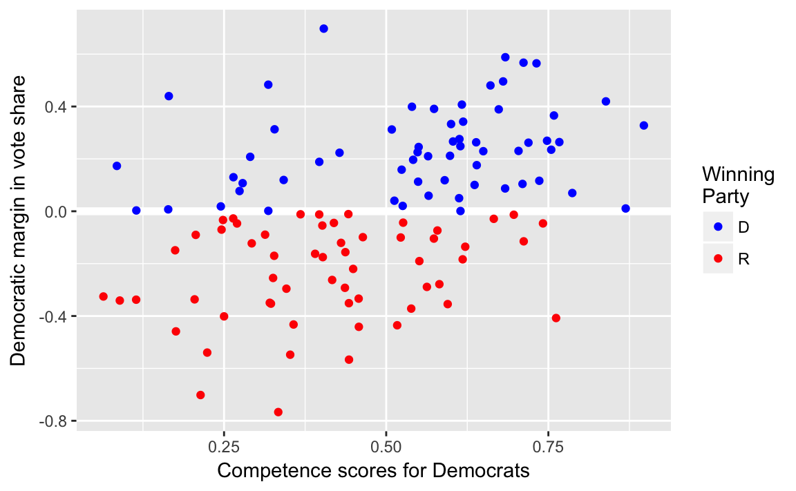
4.4.2 Correlation
4.4.3 Least Squares
Run the linear regression
fit <- lm(diff.share ~ d.comp, data = face)
fit
#>
#> Call:
#> lm(formula = diff.share ~ d.comp, data = face)
#>
#> Coefficients:
#> (Intercept) d.comp
#> -0.312 0.660There are many functions to get data out of the lm model.
In addition to these, the broom package provides three functions: glance, tidy, and augment that always return data frames.
The function glance returns a one-row data-frame summary of the model,
glance(fit)
#> r.squared adj.r.squared sigma statistic p.value df logLik AIC BIC
#> 1 0.187 0.18 0.266 27 8.85e-07 2 -10.5 27 35.3
#> deviance df.residual
#> 1 8.31 117The function tidy returns a data frame in which each row is a coefficient,
tidy(fit)
#> term estimate std.error statistic p.value
#> 1 (Intercept) -0.312 0.066 -4.73 6.24e-06
#> 2 d.comp 0.660 0.127 5.19 8.85e-07The function augment returns the original data with fitted values, residuals, and other observation level stats from the model appended to it.
augment(fit) %>% head()
#> diff.share d.comp .fitted .se.fit .resid .hat .sigma .cooksd
#> 1 0.2101 0.565 0.0606 0.0266 0.1495 0.00996 0.267 0.001600
#> 2 0.1194 0.342 -0.0864 0.0302 0.2059 0.01286 0.267 0.003938
#> 3 0.0499 0.612 0.0922 0.0295 -0.0423 0.01229 0.268 0.000158
#> 4 0.1965 0.542 0.0454 0.0256 0.1511 0.00922 0.267 0.001510
#> 5 0.4958 0.680 0.1370 0.0351 0.3588 0.01737 0.266 0.016307
#> 6 -0.3495 0.321 -0.1006 0.0319 -0.2490 0.01433 0.267 0.006436
#> .std.resid
#> 1 0.564
#> 2 0.778
#> 3 -0.160
#> 4 0.570
#> 5 1.358
#> 6 -0.941We can plot the results of the bivariate linear regression as follows:
ggplot() +
geom_point(data = face, mapping = aes(x = d.comp, y = diff.share)) +
geom_abline(slope = coef(fit)["d.comp"],
intercept = coef(fit)["(Intercept)"],
colour = "red")
A more general way to plot the predictions of the model against the data is to use the methods described in Ch 23.3.3 of R4DS. Create an evenly spaced grid of values of d.comp, and add predictions of the model to it.
grid <- face %>%
data_grid(d.comp) %>%
add_predictions(fit)
head(grid)
#> # A tibble: 6 x 2
#> d.comp pred
#> <dbl> <dbl>
#> 1 0.0640 -0.270
#> 2 0.0847 -0.256
#> 3 0.0893 -0.253
#> 4 0.1145 -0.237
#> 5 0.1148 -0.236
#> 6 0.1639 -0.204Now we can plot the regression line and the original data just like any other plot.
ggplot() +
geom_point(data = face, mapping = aes(x = d.comp, y = diff.share)) +
geom_line(data = grid, mapping = aes(x = d.comp, y = pred),
colour = "red")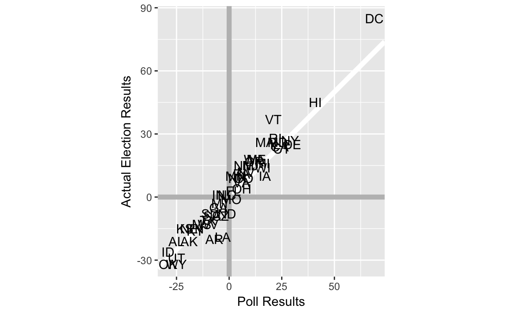 This method is more complicated than the geom_abline method for a bivariate regression, but will work for more complicated models, while the geom_abline method won’t.
Note that geom_smooth can be used to add a regression line to a data-set.
ggplot(data = face, mapping = aes(x = d.comp, y = diff.share)) +
geom_point() +
geom_smooth(method = "lm", se = FALSE) The argument
The argument method = "lm" specifies that the function lm is to be used to generate fitted values. It is equivalent to running the regression lm(y ~ x) and plotting the regression line, where y and x are the aesthetics specified by the mappings. The argument se = FALSE tells the function not to plot the confidence interval of the regression (discussed later).
4.4.4 Regression towards the mean
4.4.5 Merging Data Sets in R
See the R for Data Science chapter Relational data.
data("pres12", package = "qss")full_join(pres08, pres12, by = "state")
#> state.name state Obama.x McCain EV.x margin Obama.y Romney EV.y
#> 1 Alabama AL 39 60 9 -21 38 61 9
#> 2 Alaska AK 38 59 3 -21 41 55 3
#> 3 Arizona AZ 45 54 10 -9 45 54 11
#> 4 Arkansas AR 39 59 6 -20 37 61 6
#> 5 California CA 61 37 55 24 60 37 55
#> 6 Colorado CO 54 45 9 9 51 46 9
#> 7 Connecticut CT 61 38 7 23 58 41 7
#> 8 D.C. DC 92 7 3 85 91 7 3
#> 9 Delaware DE 62 37 3 25 59 40 3
#> 10 Florida FL 51 48 27 3 50 49 29
#> 11 Georgia GA 47 52 15 -5 45 53 16
#> 12 Hawaii HI 72 27 4 45 71 28 4
#> 13 Idaho ID 36 62 4 -26 33 65 4
#> 14 Illinois IL 62 37 21 25 58 41 20
#> 15 Indiana IN 50 49 11 1 44 54 11
#> 16 Iowa IA 54 44 7 10 52 46 6
#> 17 Kansas KS 42 57 6 -15 38 60 6
#> 18 Kentucky KY 41 57 8 -16 38 60 8
#> 19 Louisiana LA 40 59 9 -19 41 58 8
#> 20 Maine ME 58 40 4 18 56 41 4
#> 21 Maryland MD 62 36 10 26 62 36 10
#> 22 Massachusetts MA 62 36 12 26 61 38 11
#> 23 Michigan MI 57 41 17 16 54 45 16
#> 24 Minnesota MN 54 44 10 10 53 45 10
#> 25 Mississippi MS 43 56 6 -13 44 55 6
#> 26 Missouri MO 48 49 11 -1 44 54 10
#> 27 Montana MT 47 50 3 -3 42 55 3
#> 28 Nebraska NE 42 57 5 -15 38 60 5
#> 29 Nevada NV 55 43 5 12 52 46 6
#> 30 New Hampshire NH 54 45 4 9 52 46 4
#> 31 New Jersey NJ 57 42 15 15 58 41 14
#> 32 New Mexico NM 57 42 5 15 53 43 5
#> 33 New York NY 63 36 31 27 63 35 29
#> 34 North Carolina NC 50 49 15 1 48 50 15
#> 35 North Dakota ND 45 53 3 -8 39 58 3
#> 36 Ohio OH 51 47 20 4 51 48 18
#> 37 Oklahoma OK 34 66 7 -32 33 67 7
#> 38 Oregon OR 57 40 7 17 54 42 7
#> 39 Pennsylvania PA 55 44 21 11 52 47 20
#> 40 Rhode Island RI 63 35 4 28 63 35 4
#> 41 South Carolina SC 45 54 8 -9 44 55 9
#> 42 South Dakota SD 45 53 3 -8 40 58 3
#> 43 Tennessee TN 42 57 11 -15 39 59 11
#> 44 Texas TX 44 55 34 -11 41 57 38
#> 45 Utah UT 34 63 5 -29 25 73 6
#> 46 Vermont VT 67 30 3 37 67 31 3
#> 47 Virginia VA 53 46 13 7 51 47 13
#> 48 Washington WA 58 40 11 18 56 41 12
#> 49 West Virginia WV 43 56 5 -13 36 62 5
#> 50 Wisconsin WI 56 42 10 14 53 46 10
#> 51 Wyoming WY 33 65 3 -32 28 69 3Note: this could be a question. How would you change the .x, .y suffixes to something more informative To avoid the duplicate names, or change them, you can rename before merging, or use the suffix argument:
pres <- full_join(pres08, pres12, by = "state", suffix = c("_08", "_12"))
pres
#> state.name state Obama_08 McCain EV_08 margin Obama_12 Romney EV_12
#> 1 Alabama AL 39 60 9 -21 38 61 9
#> 2 Alaska AK 38 59 3 -21 41 55 3
#> 3 Arizona AZ 45 54 10 -9 45 54 11
#> 4 Arkansas AR 39 59 6 -20 37 61 6
#> 5 California CA 61 37 55 24 60 37 55
#> 6 Colorado CO 54 45 9 9 51 46 9
#> 7 Connecticut CT 61 38 7 23 58 41 7
#> 8 D.C. DC 92 7 3 85 91 7 3
#> 9 Delaware DE 62 37 3 25 59 40 3
#> 10 Florida FL 51 48 27 3 50 49 29
#> 11 Georgia GA 47 52 15 -5 45 53 16
#> 12 Hawaii HI 72 27 4 45 71 28 4
#> 13 Idaho ID 36 62 4 -26 33 65 4
#> 14 Illinois IL 62 37 21 25 58 41 20
#> 15 Indiana IN 50 49 11 1 44 54 11
#> 16 Iowa IA 54 44 7 10 52 46 6
#> 17 Kansas KS 42 57 6 -15 38 60 6
#> 18 Kentucky KY 41 57 8 -16 38 60 8
#> 19 Louisiana LA 40 59 9 -19 41 58 8
#> 20 Maine ME 58 40 4 18 56 41 4
#> 21 Maryland MD 62 36 10 26 62 36 10
#> 22 Massachusetts MA 62 36 12 26 61 38 11
#> 23 Michigan MI 57 41 17 16 54 45 16
#> 24 Minnesota MN 54 44 10 10 53 45 10
#> 25 Mississippi MS 43 56 6 -13 44 55 6
#> 26 Missouri MO 48 49 11 -1 44 54 10
#> 27 Montana MT 47 50 3 -3 42 55 3
#> 28 Nebraska NE 42 57 5 -15 38 60 5
#> 29 Nevada NV 55 43 5 12 52 46 6
#> 30 New Hampshire NH 54 45 4 9 52 46 4
#> 31 New Jersey NJ 57 42 15 15 58 41 14
#> 32 New Mexico NM 57 42 5 15 53 43 5
#> 33 New York NY 63 36 31 27 63 35 29
#> 34 North Carolina NC 50 49 15 1 48 50 15
#> 35 North Dakota ND 45 53 3 -8 39 58 3
#> 36 Ohio OH 51 47 20 4 51 48 18
#> 37 Oklahoma OK 34 66 7 -32 33 67 7
#> 38 Oregon OR 57 40 7 17 54 42 7
#> 39 Pennsylvania PA 55 44 21 11 52 47 20
#> 40 Rhode Island RI 63 35 4 28 63 35 4
#> 41 South Carolina SC 45 54 8 -9 44 55 9
#> 42 South Dakota SD 45 53 3 -8 40 58 3
#> 43 Tennessee TN 42 57 11 -15 39 59 11
#> 44 Texas TX 44 55 34 -11 41 57 38
#> 45 Utah UT 34 63 5 -29 25 73 6
#> 46 Vermont VT 67 30 3 37 67 31 3
#> 47 Virginia VA 53 46 13 7 51 47 13
#> 48 Washington WA 58 40 11 18 56 41 12
#> 49 West Virginia WV 43 56 5 -13 36 62 5
#> 50 Wisconsin WI 56 42 10 14 53 46 10
#> 51 Wyoming WY 33 65 3 -32 28 69 3The dplyr equivalent functions for cbind is bind_cols.
pres <- pres %>%
mutate(Obama2008.z = as.numeric(scale(Obama_08)),
Obama2012.z = as.numeric(scale(Obama_12)))We need to use the as.numeric function because scale() always returns a matrix. This will not produce an error in the code chunk above, since the columns of a data frame can be matrices, but will produce errors in some of the following code if it were omitted.
Scatter plot of states with vote shares in 2008 and 2012
ggplot(pres, aes(x = Obama2008.z, y = Obama2012.z, label = state)) +
geom_abline(colour = "white", size = 2) +
geom_text() +
coord_fixed() +
scale_x_continuous("Obama's standardized vote share in 2008",
limits = c(-4, 4)) +
scale_y_continuous("Obama's standardized vote share in 2012",
limits = c(-4, 4))
To calculate the bottom and top quartiles
pres %>%
filter(Obama2008.z < quantile(Obama2008.z, 0.25)) %>%
summarise(improve = mean(Obama2012.z > Obama2008.z))
#> improve
#> 1 0.583
pres %>%
filter(Obama2008.z < quantile(Obama2008.z, 0.75)) %>%
summarise(improve = mean(Obama2012.z > Obama2008.z))
#> improve
#> 1 0.5Challenge: Why is it important to standardize the vote shares?
4.4.6 Model Fit
data("florida", package = "qss")
fit2 <- lm(Buchanan00 ~ Perot96, data = florida)
fit2
#>
#> Call:
#> lm(formula = Buchanan00 ~ Perot96, data = florida)
#>
#> Coefficients:
#> (Intercept) Perot96
#> 1.3458 0.0359In addition to
summary(fit2)$r.squared
#> [1] 0.513we can get the R squared value from the data frame glance returns:
glance(fit2)
#> r.squared adj.r.squared sigma statistic p.value df logLik AIC BIC
#> 1 0.513 0.506 316 68.5 9.47e-12 2 -480 966 972
#> deviance df.residual
#> 1 6506118 65We can add predictions and residuals to the original data frame using the modelr functions add_residuals and add_predictions
florida <-
florida %>%
add_predictions(fit2) %>%
add_residuals(fit2)
glimpse(florida)
#> Observations: 67
#> Variables: 9
#> $ county <chr> "Alachua", "Baker", "Bay", "Bradford", "Brevard", "...
#> $ Clinton96 <int> 40144, 2273, 17020, 3356, 80416, 320736, 1794, 2712...
#> $ Dole96 <int> 25303, 3684, 28290, 4038, 87980, 142834, 1717, 2783...
#> $ Perot96 <int> 8072, 667, 5922, 819, 25249, 38964, 630, 7783, 7244...
#> $ Bush00 <int> 34124, 5610, 38637, 5414, 115185, 177323, 2873, 354...
#> $ Gore00 <int> 47365, 2392, 18850, 3075, 97318, 386561, 2155, 2964...
#> $ Buchanan00 <int> 263, 73, 248, 65, 570, 788, 90, 182, 270, 186, 122,...
#> $ pred <dbl> 291.3, 25.3, 214.0, 30.8, 908.2, 1400.7, 24.0, 280....
#> $ resid <dbl> -2.83e+01, 4.77e+01, 3.40e+01, 3.42e+01, -3.38e+02,...There are now two new columns in florida, pred with the fitted values (predictions), and resid with the residuals.
Use fit2_augment to create a residual plot:
fit2_resid_plot <-
ggplot(florida, aes(x = pred, y = resid)) +
geom_ref_line(h = 0) +
geom_point() +
labs(x = "Fitted values", y = "residuals")
fit2_resid_plot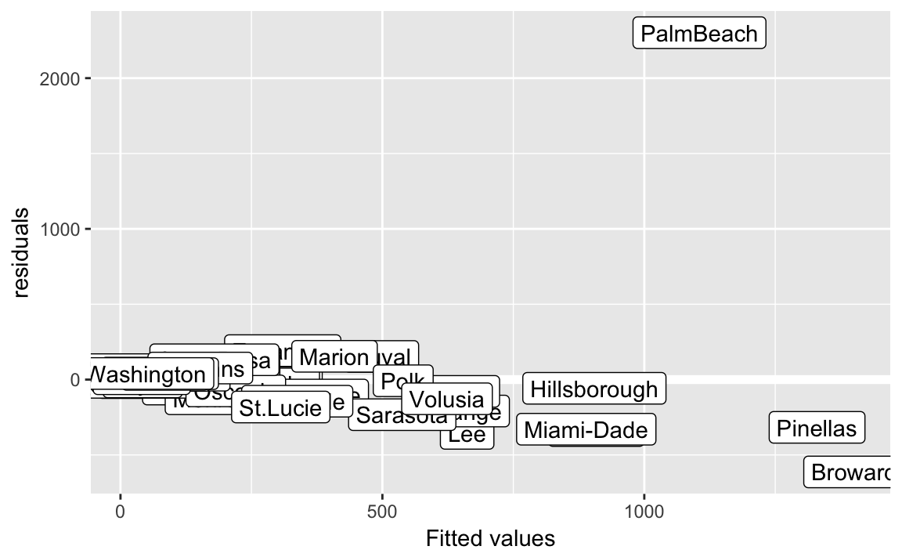 Note, we use the function geom_refline to add a reference line at 0.
Let’s add some labels to points, who is that outlier?
fit2_resid_plot +
geom_label(aes(label = county))
The outlier county is “Palm Beach”
arrange(florida) %>%
arrange(desc(abs(resid))) %>%
select(county, resid) %>%
head()
#> county resid
#> 1 PalmBeach 2302
#> 2 Broward -613
#> 3 Lee -357
#> 4 Brevard -338
#> 5 Miami-Dade -329
#> 6 Pinellas -317Data without Palm Beach
florida_pb <- filter(florida, county != "PalmBeach")
fit3 <- lm(Buchanan00 ~ Perot96, data = florida_pb)
fit3
#>
#> Call:
#> lm(formula = Buchanan00 ~ Perot96, data = florida_pb)
#>
#> Coefficients:
#> (Intercept) Perot96
#> 45.8419 0.0244\(R^2\) or coefficient of determination
glance(fit3)
#> r.squared adj.r.squared sigma statistic p.value df logLik AIC BIC
#> 1 0.851 0.849 87.7 366 3.61e-28 2 -388 782 788
#> deviance df.residual
#> 1 492803 64florida_pb %>%
add_residuals(fit3) %>%
add_predictions(fit3) %>%
ggplot(aes(x = pred, y = resid)) +
geom_ref_line(h = 0) +
geom_point() +
ylim(-750, 2500) +
xlim(0, 1500) +
labs(x = "Fitted values", y = "residuals")
Create predictions for both models using data_grid and gather_predictions:
florida_grid <-
florida %>%
data_grid(Perot96) %>%
gather_predictions(fit2, fit3) %>%
mutate(model =
fct_recode(model,
"Regression\n with Palm Beach" = "fit2",
"Regression\n without Palm Beach" = "fit3"))Note this is an example of using non-syntactic column names in a tibble, as discussed in Chapter 10 of R for data science.
ggplot() +
geom_point(data = florida, mapping = aes(x = Perot96, y = Buchanan00)) +
geom_line(data = florida_grid,
mapping = aes(x = Perot96, y = pred,
colour = model)) +
geom_label(data = filter(florida, county == "PalmBeach"),
mapping = aes(x = Perot96, y = Buchanan00, label = county),
vjust = "top", hjust = "right") +
geom_text(data = tibble(label = unique(florida_grid$model),
x = c(20000, 31000),
y = c(1000, 300)),
mapping = aes(x = x, y = y, label = label, colour = label)) +
labs(x = "Perot's Vote in 1996", y = "Buchanan's Votes in 1996") +
theme(legend.position = "none") See Graphics for communication in R for Data Science on labels and annotations in plots.
See Graphics for communication in R for Data Science on labels and annotations in plots.
4.5 Regression and Causation
Load data
data("women", package = "qss")proportion of female politicians in reserved GP vs. unreserved GP
women %>%
group_by(reserved) %>%
summarise(prop_female = mean(female))
#> # A tibble: 2 x 2
#> reserved prop_female
#> <int> <dbl>
#> 1 0 0.0748
#> 2 1 1.0000The diff in diff estimator
# drinking water facilities
# irrigation facilities
mean(women$irrigation[women$reserved == 1]) -
mean(women$irrigation[women$reserved == 0])
#> [1] -0.369Mean values of irrigation and water in reserved and non-reserved districts.
women %>%
group_by(reserved) %>%
summarise(irrigation = mean(irrigation),
water = mean(water))
#> # A tibble: 2 x 3
#> reserved irrigation water
#> <int> <dbl> <dbl>
#> 1 0 3.39 14.7
#> 2 1 3.02 24.0The difference between the two groups can be calculated with the function diff, which calculates the difference between subsequent observations. This works as long as we are careful about which group is first or second.
women %>%
group_by(reserved) %>%
summarise(irrigation = mean(irrigation),
water = mean(water)) %>%
summarise(diff_irrigation = diff(irrigation),
diff_water = diff(water))
#> # A tibble: 1 x 2
#> diff_irrigation diff_water
#> <dbl> <dbl>
#> 1 -0.369 9.25The other way uses tidyr spread and gather,
women %>%
group_by(reserved) %>%
summarise(irrigation = mean(irrigation),
water = mean(water)) %>%
gather(variable, value, -reserved) %>%
spread(reserved, value) %>%
mutate(diff = `1` - `0`)
#> # A tibble: 2 x 4
#> variable `0` `1` diff
#> <chr> <dbl> <dbl> <dbl>
#> 1 irrigation 3.39 3.02 -0.369
#> 2 water 14.74 23.99 9.252Now each row is an outcome variable of interest, and there are columns for the treatment (1) and control (0) groups, and the difference (diff).
lm(water ~ reserved, data = women)
#>
#> Call:
#> lm(formula = water ~ reserved, data = women)
#>
#> Coefficients:
#> (Intercept) reserved
#> 14.74 9.25lm(irrigation ~ reserved, data = women)
#>
#> Call:
#> lm(formula = irrigation ~ reserved, data = women)
#>
#> Coefficients:
#> (Intercept) reserved
#> 3.388 -0.3694.5.1 Regression with multiple predictors
data("social", package = "qss")
glimpse(social)
#> Observations: 305,866
#> Variables: 6
#> $ sex <chr> "male", "female", "male", "female", "female", "mal...
#> $ yearofbirth <int> 1941, 1947, 1951, 1950, 1982, 1981, 1959, 1956, 19...
#> $ primary2004 <int> 0, 0, 0, 0, 0, 0, 0, 0, 0, 0, 1, 0, 0, 1, 1, 1, 0,...
#> $ messages <chr> "Civic Duty", "Civic Duty", "Hawthorne", "Hawthorn...
#> $ primary2006 <int> 0, 0, 1, 1, 1, 0, 1, 1, 0, 0, 1, 0, 1, 0, 1, 1, 1,...
#> $ hhsize <int> 2, 2, 3, 3, 3, 3, 3, 3, 2, 2, 1, 2, 2, 1, 2, 2, 1,...
levels(social$messages)
#> NULL
fit <- lm(primary2006 ~ messages, data = social)
fit
#>
#> Call:
#> lm(formula = primary2006 ~ messages, data = social)
#>
#> Coefficients:
#> (Intercept) messagesControl messagesHawthorne
#> 0.31454 -0.01790 0.00784
#> messagesNeighbors
#> 0.06341Create indicator variables
social <-
social %>%
mutate(Control = as.integer(messages == "Control"),
Hawthorne = as.integer(messages == "Hawthorne"),
Neighbors = as.integer(messages == "Neighbors"))alternatively, create these using a for loop. This is easier to understand and less prone to typo.
for (i in unique(social$messages)) {
social[[i]] <- as.integer(social[["messages"]] == i)
}We created a variable for each level of messages even though we will exclude one of them.
lm(primary2006 ~ Control + Hawthorne + Neighbors, data = social)
#>
#> Call:
#> lm(formula = primary2006 ~ Control + Hawthorne + Neighbors, data = social)
#>
#> Coefficients:
#> (Intercept) Control Hawthorne Neighbors
#> 0.31454 -0.01790 0.00784 0.06341Create predictions for each unique value of messages
unique_messages <-
data_grid(social, messages) %>%
add_predictions(fit)
unique_messages
#> # A tibble: 4 x 2
#> messages pred
#> <chr> <dbl>
#> 1 Civic Duty 0.315
#> 2 Control 0.297
#> 3 Hawthorne 0.322
#> 4 Neighbors 0.378Compare to the sample averages
social %>%
group_by(messages) %>%
summarise(mean(primary2006))
#> # A tibble: 4 x 2
#> messages `mean(primary2006)`
#> <chr> <dbl>
#> 1 Civic Duty 0.315
#> 2 Control 0.297
#> 3 Hawthorne 0.322
#> 4 Neighbors 0.378Linear regression without intercept.
fit.noint <- lm(primary2006 ~ -1 + messages, data = social)
fit.noint
#>
#> Call:
#> lm(formula = primary2006 ~ -1 + messages, data = social)
#>
#> Coefficients:
#> messagesCivic Duty messagesControl messagesHawthorne
#> 0.315 0.297 0.322
#> messagesNeighbors
#> 0.378Calculating the regression average effect is also easier if we make the control group the first level so all regression coefficients are comparisons to it. Use fct_relevel to make “Control”
fit.control <-
mutate(social, messages = fct_relevel(messages, "Control")) %>%
lm(primary2006 ~ messages, data = .)
fit.control
#>
#> Call:
#> lm(formula = primary2006 ~ messages, data = .)
#>
#> Coefficients:
#> (Intercept) messagesCivic Duty messagesHawthorne
#> 0.2966 0.0179 0.0257
#> messagesNeighbors
#> 0.0813Difference in means
social %>%
group_by(messages) %>%
summarise(primary2006 = mean(primary2006)) %>%
mutate(Control = primary2006[messages == "Control"],
diff = primary2006 - Control)
#> # A tibble: 4 x 4
#> messages primary2006 Control diff
#> <chr> <dbl> <dbl> <dbl>
#> 1 Civic Duty 0.315 0.297 0.0179
#> 2 Control 0.297 0.297 0.0000
#> 3 Hawthorne 0.322 0.297 0.0257
#> 4 Neighbors 0.378 0.297 0.0813Adjusted R-squared is included in the output of broom::glance()
glance(fit)
#> r.squared adj.r.squared sigma statistic p.value df logLik AIC
#> 1 0.00328 0.00327 0.463 336 1.06e-217 4 -198247 396504
#> BIC deviance df.residual
#> 1 396557 65468 305862
glance(fit)$adj.r.squared
#> [1] 0.003274.5.2 Heterogeneous Treatment Effects
Average treatment effect (ate) among those who voted in 2004 primary
ate <-
social %>%
group_by(primary2004, messages) %>%
summarise(primary2006 = mean(primary2006)) %>%
spread(messages, primary2006) %>%
mutate(ate_Neighbors = Neighbors - Control) %>%
select(primary2004, Neighbors, Control, ate_Neighbors)
ate
#> # A tibble: 2 x 4
#> # Groups: primary2004 [2]
#> primary2004 Neighbors Control ate_Neighbors
#> <int> <dbl> <dbl> <dbl>
#> 1 0 0.306 0.237 0.0693
#> 2 1 0.482 0.386 0.0965Difference in ATE in 2004 voters and non-voters
diff(ate$ate_Neighbors)
#> [1] 0.0272social.neighbor <- social %>%
filter( (messages == "Control") | (messages == "Neighbors"))
fit.int <- lm(primary2006 ~ primary2004 + messages + primary2004:messages,
data = social.neighbor)
fit.int
#>
#> Call:
#> lm(formula = primary2006 ~ primary2004 + messages + primary2004:messages,
#> data = social.neighbor)
#>
#> Coefficients:
#> (Intercept) primary2004
#> 0.2371 0.1487
#> messagesNeighbors primary2004:messagesNeighbors
#> 0.0693 0.0272lm(primary2006 ~ primary2004 * messages, data = social.neighbor)
#>
#> Call:
#> lm(formula = primary2006 ~ primary2004 * messages, data = social.neighbor)
#>
#> Coefficients:
#> (Intercept) primary2004
#> 0.2371 0.1487
#> messagesNeighbors primary2004:messagesNeighbors
#> 0.0693 0.0272social.neighbor <-
social.neighbor %>%
mutate(age = 2008 - yearofbirth)
summary(social.neighbor$age)
#> Min. 1st Qu. Median Mean 3rd Qu. Max.
#> 22.0 43.0 52.0 51.8 61.0 108.0
fit.age <- lm(primary2006 ~ age * messages, data = social.neighbor)
fit.age
#>
#> Call:
#> lm(formula = primary2006 ~ age * messages, data = social.neighbor)
#>
#> Coefficients:
#> (Intercept) age messagesNeighbors
#> 0.089477 0.003998 0.048573
#> age:messagesNeighbors
#> 0.000628Calculate average treatment effects
ate.age <-
crossing(age = seq(from = 25, to = 85, by = 20),
messages = c("Neighbors", "Control")) %>%
add_predictions(fit.age) %>%
spread(messages, pred) %>%
mutate(diff = Neighbors - Control)
ate.age
#> # A tibble: 4 x 4
#> age Control Neighbors diff
#> <dbl> <dbl> <dbl> <dbl>
#> 1 25 0.189 0.254 0.0643
#> 2 45 0.269 0.346 0.0768
#> 3 65 0.349 0.439 0.0894
#> 4 85 0.429 0.531 0.1020You can use poly function to calculate polynomials instead of adding each term, age + I(age ^ 2). Though note that the coefficients will be be different since by default poly calculates orthogonal polynomials instead of the natural (raw) polynomials. However, you really shouldn’t interpret the coefficients directly anyways, so this should matter.
fit.age2 <- lm(primary2006 ~ poly(age, 2) * messages,
data = social.neighbor)
fit.age2
#>
#> Call:
#> lm(formula = primary2006 ~ poly(age, 2) * messages, data = social.neighbor)
#>
#> Coefficients:
#> (Intercept) poly(age, 2)1
#> 0.2966 27.6665
#> poly(age, 2)2 messagesNeighbors
#> -10.2832 0.0816
#> poly(age, 2)1:messagesNeighbors poly(age, 2)2:messagesNeighbors
#> 4.5820 -5.5124Create a data frame of combinations of ages and messages using data_grid, which means that we only need to specify the variables, and not the specific values,
y.hat <-
data_grid(social.neighbor, age, messages) %>%
add_predictions(fit.age2)ggplot(y.hat, aes(x = age, y = pred,
colour = str_c(messages, " condition"))) +
geom_line() +
labs(colour = "", y = "predicted turnout rates") +
theme(legend.position = "bottom")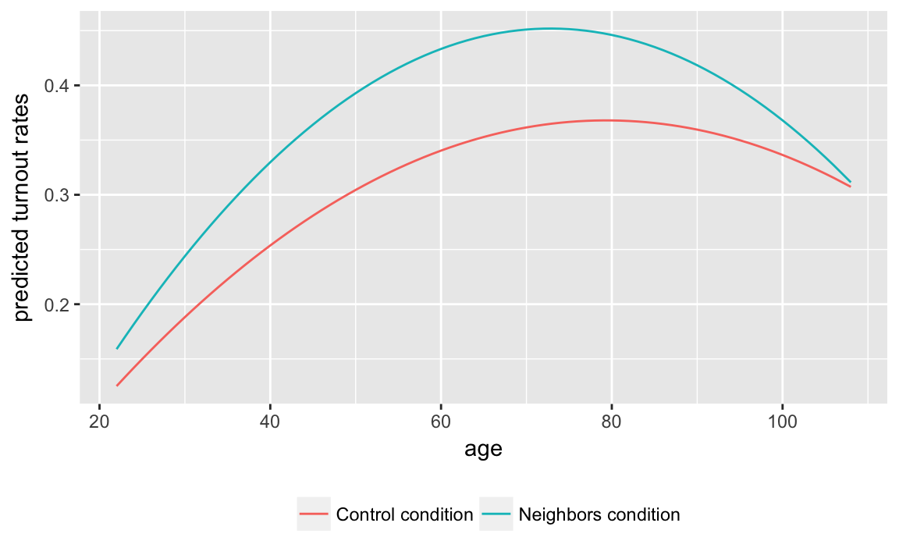
y.hat %>%
spread(messages, pred) %>%
mutate(ate = Neighbors - Control) %>%
filter(age > 20, age < 90) %>%
ggplot(aes(x = age, y = ate)) +
geom_line() +
labs(y = "estimated average treatment effect") +
ylim(0, 0.1)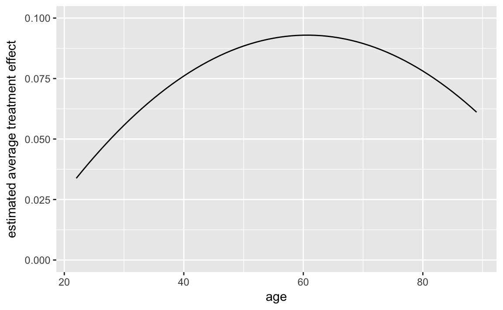
4.6 Regression Discontinuity Design
data("MPs", package = "qss")
MPs_labour <- filter(MPs, party == "labour")
MPs_tory <- filter(MPs, party == "tory")
labour_fit1 <- lm(ln.net ~ margin,
data = filter(MPs_labour, margin < 0))
labour_fit2 <- lm(ln.net ~ margin, MPs_labour, margin > 0)
tory_fit1 <- lm(ln.net ~ margin,
data = filter(MPs_tory, margin < 0))
tory_fit2 <- lm(ln.net ~ margin, data = filter(MPs_tory, margin > 0))Use to generate a grid for predictions.
y1_labour <-
filter(MPs_labour, margin < 0) %>%
data_grid(margin) %>%
add_predictions(labour_fit1)
y2_labour <-
filter(MPs_labour, margin > 0) %>%
data_grid(margin) %>%
add_predictions(labour_fit2)
y1_tory <-
filter(MPs_tory, margin < 0) %>%
data_grid(margin) %>%
add_predictions(tory_fit1)
y2_tory <-
filter(MPs_tory, margin > 0) %>%
data_grid(margin) %>%
add_predictions(tory_fit2)Tory politicians
ggplot() +
geom_ref_line(v = 0) +
geom_point(data = MPs_tory,
mapping = aes(x = margin, y = ln.net)) +
geom_line(data = y1_tory,
mapping = aes(x = margin, y = pred), colour = "red", size = 1.5) +
geom_line(data = y2_tory,
mapping = aes(x = margin, y = pred), colour = "red", size = 1.5) +
labs(x = "margin of victory", y = "log net wealth at death",
title = "labour")
We can actually produce this plot easily without running the regressions, by using geom_smooth:
ggplot(mutate(MPs, winner = (margin > 0)),
aes(x = margin, y = ln.net)) +
geom_ref_line(v = 0) +
geom_point() +
geom_smooth(method = lm, se = FALSE, mapping = aes(group = winner)) +
facet_grid(party ~ .) +
labs(x = "margin of victory", y = "log net wealth at death")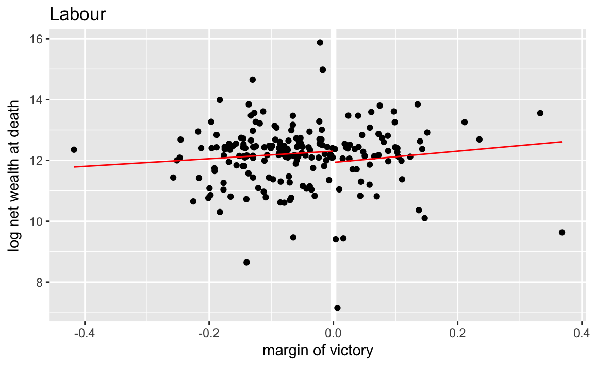
In the previous code, I didn’t directly compute the the average net wealth at 0, so I’ll need to do that here. I’ll use gather_predictions to add predictions for multiple models:
spread_predictions(data_frame(margin = 0),
tory_fit1, tory_fit2) %>%
mutate(rd_est = tory_fit2 - tory_fit1)
#> # A tibble: 1 x 4
#> margin tory_fit1 tory_fit2 rd_est
#> <dbl> <dbl> <dbl> <dbl>
#> 1 0 12.5 13.2 0.65Tidyverse:
tory_fit3 <- lm(margin.pre ~ margin, data = filter(MPs_tory, margin < 0))
tory_fit4 <- lm(margin.pre ~ margin, data = filter(MPs_tory, margin > 0))
(filter(tidy(tory_fit3), term == "(Intercept)")[["estimate"]] -
filter(tidy(tory_fit4), term == "(Intercept)")[["estimate"]])
#> [1] 0.01734.7 Spatial Data
Some resources on plotting spatial data in R:
ggplot2 has several map-related functions
- borders
- fortify.map
ggmap allows ggplot to us a map from Google Maps, OpenStreet Maps or similar as a background for the plot.
- David Kahle and Hadley Wickham. 2013. ggmap: Spatial Visualization with ggplot2. Journal of Statistical Software
Github dkahle/ggmamp
- tmap is not built on ggplot2 but uses a ggplot2-like API for network data.
leaflet is an R interface to a popular javascript mapping library.
Here are few tutorials on plotting spatial data in ggplot2:
Prerequisites
library("tidyverse")
library("lubridate")
library("stringr")
library("forcats")
library("modelr")
library("ggrepel")4.7.1 Spatial Data in R
data("us.cities", package = "maps")
glimpse(us.cities)
#> Observations: 1,005
#> Variables: 6
#> $ name <chr> "Abilene TX", "Akron OH", "Alameda CA", "Albany GA...
#> $ country.etc <chr> "TX", "OH", "CA", "GA", "NY", "OR", "NM", "LA", "V...
#> $ pop <int> 113888, 206634, 70069, 75510, 93576, 45535, 494962...
#> $ lat <dbl> 32.5, 41.1, 37.8, 31.6, 42.7, 44.6, 35.1, 31.3, 38...
#> $ long <dbl> -99.7, -81.5, -122.3, -84.2, -73.8, -123.1, -106.6...
#> $ capital <int> 0, 0, 0, 0, 2, 0, 0, 0, 0, 0, 0, 0, 0, 0, 0, 0, 0,...usa_map <- map_data("usa")
#>
#> Attaching package: 'maps'
#> The following object is masked from 'package:purrr':
#>
#> map
capitals <- filter(us.cities,
capital == 2,
!country.etc %in% c("HI", "AK"))
ggplot() +
geom_map(map = usa_map) +
borders(database = "usa") +
geom_point(aes(x = long, y = lat, size = pop),
data = capitals) +
# scale size area ensures: 0 = no area
scale_size_area() +
coord_quickmap() +
theme_void() +
labs(x = "", y = "", title = "US State Capitals",
size = "Population")
cal_cities <- filter(us.cities, country.etc == "CA") %>%
top_n(7, pop)
ggplot() +
borders(database = "state", regions = "California") +
geom_point(aes(x = long, y = lat), data = cal_cities) +
geom_text_repel(aes(x = long, y = lat, label = name), data = cal_cities) +
coord_quickmap() +
theme_minimal() +
labs(x = "", y = "")
4.7.2 Colors in R
For more resources on using colors in R
R4DSchapter Graphics for Communication- ggplot2 book Chapter “Scales”
- Jenny Bryan Using colors in R
- Achim Zeileis, Kurt Hornik, Paul Murrell (2009). Escaping RGBland: Selecting Colors for Statistical Graphics. Computational Statistics & Data Analysis DOI
- colorspace vignette
- Maureen Stone Choosing Colors for Data Visualization
- ColorBrewer A website with a variety of palettes, primarily designed for maps, but also useful in data viz.
- Stephen Few Practical Rules for Using Color in Charts
- Why Should Engineers and Scientists by Worried About Color?
- A Better Default Colormap for Matplotlib A SciPy 2015 talk that describes how the viridis was created.
- Evaluation of Artery Visualizations for Heart Disease Diagnosis Using the wrong color scale can be deadly … literally.
- The python package matplotlib has a good discussion of colormaps.
- Peter Kovesi Good Color Maps: How to Design Them.
- See the viridis, ggthemes, dichromat, and pals packages for color palettes.
Use scale_identity for the color and alpha scales since the values of the variables are the values of the scale itself (the color names, and the alpha values).
ggplot(tibble(x = rep(1:4, each = 2),
y = x + rep(c(0, 0.2), times = 2),
colour = rep(c("black", "red"), each = 4),
alpha = c(1, 1, 0.5, 0.5, 1, 1, 0.5, 0.5)),
aes(x = x, y = y, colour = colour, alpha = alpha)) +
geom_point(size = 15) +
scale_color_identity() +
scale_alpha_identity() +
theme_bw() +
theme(panel.grid = element_blank())
4.7.3 United States Presidential Elections
data("pres08", package = "qss")
pres08 <- pres08 %>%
mutate(Dem = Obama / (Obama + McCain),
Rep = McCain / (Obama + McCain))ggplot() +
borders(database = "state", regions = "California", fill = "blue") +
coord_quickmap() +
theme_void()
cal_color <- filter(pres08, state == "CA") %>% {
rgb(red = .$Rep, green = 0, blue = .$Dem)
}
ggplot() +
borders(database = "state", regions = "California", fill = cal_color) +
coord_quickmap() +
theme_void()
# America as red and blue states
map(database = "state") # create a map
for (i in 1:nrow(pres08)) {
if ( (pres08$state[i] != "HI") & (pres08$state[i] != "AK") &
(pres08$state[i] != "DC")) {
map(database = "state", regions = pres08$state.name[i],
col = ifelse(pres08$Rep[i] > pres08$Dem[i], "red", "blue"),
fill = TRUE, add = TRUE)
}
}
## America as purple states
map(database = "state") # create a map
for (i in 1:nrow(pres08)) {
if ( (pres08$state[i] != "HI") & (pres08$state[i] != "AK") &
(pres08$state[i] != "DC")) {
map(database = "state", regions = pres08$state.name[i],
col = rgb(red = pres08$Rep[i], blue = pres08$Dem[i],
green = 0), fill = TRUE, add = TRUE)
}
}states <- map_data("state") %>%
left_join(mutate(pres08, state.name = str_to_lower(state.name)),
by = c("region" = "state.name")) %>%
# drops DC
filter(!is.na(EV)) %>%
mutate(party = if_else(Dem > Rep, "Dem", "Rep"),
color = map2_chr(Dem, Rep, ~ rgb(blue = .x, red = .y, green = 0)))
ggplot(states) +
geom_polygon(aes(group = group, x = long, y = lat,
fill = party)) +
coord_quickmap() +
scale_fill_manual(values = c("Rep" = "red", "Dem" = "blue")) +
theme_void() +
labs(x = "", y = "")
For plotting the purple states, I use since the color column contains the RGB values to use in the plot:
ggplot(states) +
geom_polygon(aes(group = group, x = long, y = lat,
fill = color)) +
coord_quickmap() +
scale_fill_identity() +
theme_void() +
labs(x = "", y = "")However, plotting purple states is not a good data visualization. Even though the colors are a proportional mixture of red and blue, human visual perception doesn’t work that way.
The proportion of the democratic vote is best thought of a diverging scale with 0.5 is midpoint. And since the Democratic Party is associated with the color blue and the Republican Party is associated with the color red. The Color Brewer palette RdBu is an example:
ggplot(states) +
geom_polygon(aes(group = group, x = long, y = lat, fill = Dem)) +
scale_fill_distiller("% Obama", direction = 1, limits = c(0, 1), type = "div",
palette = "RdBu") +
coord_quickmap() +
theme_void() +
labs(x = "", y = "")
4.7.4 Expansion of Walmart
We don’t need to do the direct mapping since
data("walmart", package = "qss")
ggplot() +
borders(database = "state") +
geom_point(aes(x = long, y = lat, colour = type, size = size),
data = mutate(walmart,
size = if_else(type == "DistributionCenter", 2, 1)),
alpha = 1 / 3) +
coord_quickmap() +
scale_size_identity() +
guides(color = guide_legend(override.aes = list(alpha = 1))) +
theme_void() We don’t need to worry about colors since ggplot handles that. I use guides to so that the colors or not transparent in the legend (see R for Data Science chapterGraphics for communication).
To make a plot showing all Walmart stores opened up through that year, I write a function, that takes the year and dataset as parameters.
Since I am calling the function for its side effect (printing the plot) rather than the value it returns, I use the walk function rather than map. See R for Data Science, Chapter 21.8: Walk for more information.
map_walmart <- function(year, .data) {
.data <- filter(.data, opendate < make_date(year, 1, 1)) %>%
mutate(size = if_else(type == "DistributionCenter", 2, 1))
ggplot() +
borders(database = "state") +
geom_point(aes(x = long, y = lat, colour = type, size = size),
data = .data, alpha = 1 / 3) +
coord_quickmap() +
scale_size_identity() +
guides(color = guide_legend(override.aes = list(alpha = 1))) +
theme_void() +
ggtitle(year)
}
years <- c(1975, 1985, 1995, 2005)
walk(years, ~ print(map_walmart(.x, walmart)))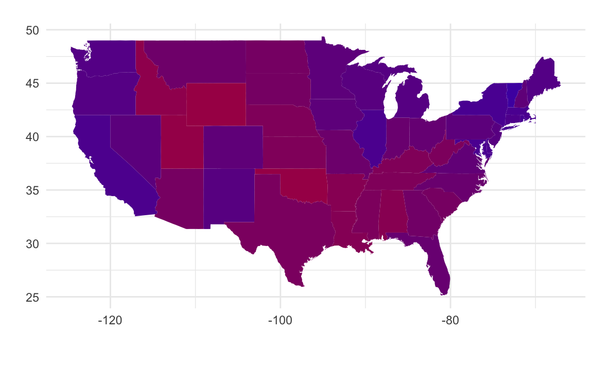


4.7.5 Animation in R
For easy animation with ggplot2, use the gganimate package. Note that the gganimate package is not on CRAN, so you have to install it with the devtools package:
install.packages("cowplot")
devtools::install_github("dgrtwo/animate")library("gganimate")An animation is a series of frames. The gganimate package works by adding a frame aesthetic to ggplots, and function will animate the plot.
I use frame = year(opendate) to have the animation use each year as a frame, and cumulative = TRUE so that the previous years are shown.
walmart_animated <-
ggplot() +
borders(database = "state") +
geom_point(aes(x = long, y = lat,
colour = type,
fill = type,
frame = year(opendate),
cumulative = TRUE),
data = walmart) +
coord_quickmap() +
theme_void()
gganimate(walmart_animated)
unnamed-chunk-18
4.8 Textual data
Prerequisites
library("tidyverse")
library("lubridate")
library("stringr")
library("forcats")
library("modelr")
library("tm")
library("SnowballC")
library("tidytext")This section will primarily use the tidytext package. It is a relatively new package. The tm and quanteda (by Ken Benoit) packages are more established and use the document-term matrix format as described in the QSS chapter. The tidytext package stores everything in a data frame; this may be less efficient than the other packages, but has the benefit of being able to easily take advantage of the tidyverse ecosystem. If your corpus is not too large, this shouldn’t be an issue.
See Tidy Text Mining with R for a full introduction to using tidytext.
In tidy data, each row is an observation and each column is a variable. In the tidytext package, documents are stored as data frames with one-term-per-row.
We can cast data into the tidytext format either from the Corpus object, or, after processing, from the document-term matrix object.
DIR_SOURCE <- file.path("qss", "DISCOVERY", "federalist")
corpus_raw <- VCorpus(DirSource(directory = DIR_SOURCE, pattern = "fp"))
corpus_raw
#> <<VCorpus>>
#> Metadata: corpus specific: 0, document level (indexed): 0
#> Content: documents: 85Use the function tidy to convert the to a data frame with one row per document.
corpus_tidy <- tidy(corpus_raw, "corpus")
corpus_tidy
#> # A tibble: 85 x 8
#> author datetimestamp description heading id language origin
#> <lgl> <dttm> <lgl> <lgl> <chr> <chr> <lgl>
#> 1 NA 2017-12-25 20:58:48 NA NA fp01.txt en NA
#> 2 NA 2017-12-25 20:58:48 NA NA fp02.txt en NA
#> 3 NA 2017-12-25 20:58:48 NA NA fp03.txt en NA
#> 4 NA 2017-12-25 20:58:48 NA NA fp04.txt en NA
#> 5 NA 2017-12-25 20:58:48 NA NA fp05.txt en NA
#> 6 NA 2017-12-25 20:58:48 NA NA fp06.txt en NA
#> # ... with 79 more rows, and 1 more variables: text <chr>The text column contains the text of the documents themselves. Since most of the metadata columns are either missings or irrelevant for our purposes, we’ll delete those columns, keeping only the document (id) and text columns.
corpus_tidy <- select(corpus_tidy, id, text)Also, we want to extract the essay number and use that as the document id rather than its file name.
corpus_tidy <-
mutate(corpus_tidy, document = as.integer(str_extract(id, "\\d+"))) %>%
select(-id)The function tokenizes the document texts:
tokens <- corpus_tidy %>%
# tokenizes into words and stems them
unnest_tokens(word, text, token = "word_stems") %>%
# remove any numbers in the strings
mutate(word = str_replace_all(word, "\\d+", "")) %>%
# drop any empty strings
filter(word != "")
tokens
#> # A tibble: 202,089 x 2
#> document word
#> <int> <chr>
#> 1 1 after
#> 2 1 an
#> 3 1 unequivoc
#> 4 1 experi
#> 5 1 of
#> 6 1 the
#> # ... with 2.021e+05 more rowsThe unnest_tokens function uses the tokenizers package to tokenize the text. By default, it uses the function which removes punctuation, and lowercases the words. I set the tokenizer to to stem the word, using the SnowballC package.
We can remove stop-words with an anti_join on the dataset stop_words
data("stop_words", package = "tidytext")
tokens <- anti_join(tokens, stop_words, by = "word")4.8.1 Document-Term Matrix
In tokens there is one observation for each token (word) in the each document. This is almost equivalent to a document-term matrix. For a document-term matrix we need documents, and terms as the keys for the data and a column with the number of times the term appeared in the document.
dtm <- count(tokens, document, word)
head(dtm)
#> # A tibble: 6 x 3
#> document word n
#> <int> <chr> <int>
#> 1 1 abl 1
#> 2 1 absurd 1
#> 3 1 accid 1
#> 4 1 accord 1
#> 5 1 acknowledg 1
#> 6 1 act 14.8.2 Topic Discovery
Plot the word-clouds for essays 12 and 24:
library("wordcloud")
filter(dtm, document == 12) %>% {
wordcloud(.$word, .$n, max.words = 20)
}filter(dtm, document == 24) %>% {
wordcloud(.$word, .$n, max.words = 20)
}
Use the function bind_tf_idf to add a column with the tf-idf to the data frame.
dtm <- bind_tf_idf(dtm, word, document, n)
dtm
#> # A tibble: 38,847 x 6
#> document word n tf idf tf_idf
#> <int> <chr> <int> <dbl> <dbl> <dbl>
#> 1 1 abl 1 0.00145 0.705 0.001022
#> 2 1 absurd 1 0.00145 1.735 0.002514
#> 3 1 accid 1 0.00145 3.750 0.005434
#> 4 1 accord 1 0.00145 0.754 0.001092
#> 5 1 acknowledg 1 0.00145 1.552 0.002250
#> 6 1 act 1 0.00145 0.400 0.000579
#> # ... with 3.884e+04 more rowsThe 10 most important words for Paper No. 12 are
dtm %>%
filter(document == 12) %>%
top_n(10, tf_idf)
#> # A tibble: 10 x 6
#> document word n tf idf tf_idf
#> <int> <chr> <int> <dbl> <dbl> <dbl>
#> 1 12 cent 2 0.00199 4.44 0.00884
#> 2 12 coast 3 0.00299 3.75 0.01119
#> 3 12 commerc 8 0.00796 1.11 0.00884
#> 4 12 contraband 3 0.00299 4.44 0.01326
#> 5 12 excis 5 0.00498 2.65 0.01319
#> 6 12 gallon 2 0.00199 4.44 0.00884
#> # ... with 4 more rowsand for Paper No. 24,
dtm %>%
filter(document == 24) %>%
top_n(10, tf_idf)
#> # A tibble: 10 x 6
#> document word n tf idf tf_idf
#> <int> <chr> <int> <dbl> <dbl> <dbl>
#> 1 24 armi 7 0.00858 1.26 0.01085
#> 2 24 arsenal 2 0.00245 3.75 0.00919
#> 3 24 dock 3 0.00368 4.44 0.01633
#> 4 24 frontier 3 0.00368 2.83 0.01042
#> 5 24 garrison 6 0.00735 2.83 0.02083
#> 6 24 nearer 2 0.00245 3.34 0.00820
#> # ... with 4 more rowsThe slightly different results from the book are due to tokenization differences.
Subset those documents known to have been written by Hamilton.
HAMILTON_ESSAYS <- c(1, 6:9, 11:13, 15:17, 21:36, 59:61, 65:85)
dtm_hamilton <- filter(dtm, document %in% HAMILTON_ESSAYS)The kmeans function expects the input to be rows for observations and columns for each variable: in our case that would be documents as rows, and words as columns, with the tf-idf as the cell values. We could use spread to do this, but that would be a large matrix.
CLUSTERS <- 4
km_out <-
kmeans(cast_dtm(dtm_hamilton, document, word, tf_idf), centers = CLUSTERS,
nstart = 10)
km_out$iter
#> [1] 3Data frame with the unique terms used by Hamilton. I extract these from the column names of the DTM after cast_dtm to ensure that the order is the same as the k-means results.
hamilton_words <-
tibble(word = colnames(cast_dtm(dtm_hamilton, document, word, tf_idf)))The centers of the clusters is a cluster x word matrix. We want to transpose it and then append columns to hamilton_words so the location of each word in the cluster is listed.
dim(km_out$centers)
#> [1] 4 3850hamilton_words <- bind_cols(hamilton_words, as_tibble(t(km_out$centers)))
hamilton_words
#> # A tibble: 3,850 x 5
#> word `1` `2` `3` `4`
#> <chr> <dbl> <dbl> <dbl> <dbl>
#> 1 abl 0.000939 0.000743 0.00000 0.000000
#> 2 absurd 0.000000 0.000517 0.00000 0.000882
#> 3 accid 0.000000 0.000202 0.00000 0.000000
#> 4 accord 0.000000 0.000399 0.00000 0.000852
#> 5 acknowledg 0.000000 0.000388 0.00000 0.000473
#> 6 act 0.000000 0.000560 0.00176 0.000631
#> # ... with 3,844 more rowsTo find the top 10 words in each centroid, we use top_n with group_by:
top_words_cluster <-
gather(hamilton_words, cluster, value, -word) %>%
group_by(cluster) %>%
top_n(10, value)We can print them out using a for loop
for (i in 1:CLUSTERS) {
cat("CLUSTER ", i, ": ",
str_c(filter(top_words_cluster, cluster == i)$word, collapse = ", "),
"\n\n")
}
#> CLUSTER 1 : presid, appoint, senat, claus, expir, fill, recess, session, unfound, vacanc
#>
#> CLUSTER 2 : offic, presid, tax, land, revenu, armi, militia, senat, taxat, claus
#>
#> CLUSTER 3 : sedit, guilt, chief, clemenc, impun, plead, crime, pardon, treason, conniv
#>
#> CLUSTER 4 : court, jurisdict, inferior, suprem, trial, tribun, cogniz, juri, impeach, appelThis is alternative code that prints out a table:
gather(hamilton_words, cluster, value, -word) %>%
group_by(cluster) %>%
top_n(10, value) %>%
summarise(top_words = str_c(word, collapse = ", ")) %>%
knitr::kable()| cluster | top_words |
|---|---|
| 1 | presid, appoint, senat, claus, expir, fill, recess, session, unfound, vacanc |
| 2 | offic, presid, tax, land, revenu, armi, militia, senat, taxat, claus |
| 3 | sedit, guilt, chief, clemenc, impun, plead, crime, pardon, treason, conniv |
| 4 | court, jurisdict, inferior, suprem, trial, tribun, cogniz, juri, impeach, appel |
Or to print out the documents in each cluster,
enframe(km_out$cluster, "document", "cluster") %>%
group_by(cluster) %>%
summarise(documents = str_c(document, collapse = ", ")) %>%
knitr::kable()| cluster | documents |
|---|---|
| 1 | 67 |
| 2 | 1, 6, 7, 8, 9, 11, 12, 13, 15, 16, 17, 21, 22, 23, 24, 25, 26, 27, 28, 29, 30, 31, 32, 33, 34, 35, 36, 59, 60, 61, 66, 68, 69, 70, 71, 72, 73, 75, 76, 77, 78, 79, 80, 84, 85 |
| 3 | 74 |
| 4 | 65, 81, 82, 83 |
4.8.4 Cross-Validation
tidyverse: For cross-validation, I rely on the modelr package function RDoc("modelr::crossv_kfold"). See the tutorial Cross validation of linear regression with modelr for more on using modelr for cross validation or k-fold cross-validation with modelr and broom.
In sample, this regression perfectly predicts the authorship of the documents with known authors.
author_data %>%
filter(!is.na(author)) %>%
group_by(author) %>%
summarise(`Proportion Correct` = mean(author == pred_author))
#> # A tibble: 2 x 2
#> author `Proportion Correct`
#> <chr> <dbl>
#> 1 Hamilton 1
#> 2 Madison 1Create the cross-validation data-sets using . As in the chapter, I will use a leave-one-out cross-validation, which is a k-fold cross-validation where k is the number of observations. To simplify this, I define the crossv_loo function that runs crossv_kfold with k = nrow(data).
crossv_loo <- function(data, id = ".id") {
modelr::crossv_kfold(data, k = nrow(data), id = id)
}
# leave one out cross-validation object
cv <- author_data %>%
filter(!is.na(author)) %>%
crossv_loo()Now estimate the model for each training dataset
models <- map(cv$train, ~ lm(author2 ~ upon + there + consequently + whilst,
data = ., model = FALSE))Note that I use purrr::map to ensure that the correct map() function is used since the maps package also defines a map.
Now calculate the test performance on the held out observation,
test <- map2_df(models, cv$test,
function(mod, test) {
add_predictions(as.data.frame(test), mod) %>%
mutate(pred_author =
if_else(pred >= 0, "Hamilton", "Madison"),
correct = (pred_author == author))
})
test %>%
group_by(author) %>%
summarise(mean(correct))
#> # A tibble: 2 x 2
#> author `mean(correct)`
#> <chr> <dbl>
#> 1 Hamilton 1.000
#> 2 Madison 0.786When adding prediction with add_predictions it added predictions for missing values as well.
Table of authorship of disputed papers
author_data %>%
filter(is.na(author)) %>%
select(document, pred, pred_author) %>%
knitr::kable()| document | pred | pred_author |
|---|---|---|
| 18 | -0.360 | Madison |
| 19 | -0.587 | Madison |
| 20 | -0.055 | Madison |
| 49 | -0.966 | Madison |
| 50 | -0.003 | Madison |
| 51 | -1.520 | Madison |
| 52 | -0.195 | Madison |
| 53 | -0.506 | Madison |
| 54 | -0.521 | Madison |
| 55 | 0.094 | Hamilton |
| 56 | -0.550 | Madison |
| 57 | -1.221 | Madison |
| 62 | -0.946 | Madison |
| 63 | -0.184 | Madison |
disputed_essays <- filter(author_data, is.na(author))$document
ggplot(mutate(author_data,
author = fct_explicit_na(factor(author), "Disputed")),
aes(y = document, x = pred, colour = author, shape = author)) +
geom_ref_line(v = 0) +
geom_point() +
scale_y_continuous(breaks = seq(10, 80, by = 10),
minor_breaks = seq(5, 80, by = 5)) +
scale_color_manual(values = c("Madison" = "blue",
"Hamilton" = "red",
"Disputed" = "black")) +
scale_shape_manual(values = c("Madison" = 16, "Hamilton" = 15,
"Disputed" = 17)) +
labs(colour = "Author", shape = "Author",
y = "Federalist Papers", x = "Predicted values")
4.9 Network data
The igraph, sna, and network packages are the best in class. See the Social Network Analysis section of the Social Sciences Task View. See this tutorial by Katherin Ognyanova, Static and dynamic network visualization with R, for a good overview of network visualization with those packages in R.
There are several packages that plot networks in ggplot2.
- ggnetwork
- ggraph
- geomnet
- GGally functions ggnet,
ggnet2, andggnetworkmap. - ggCompNet compares the speed of various network plotting packages in R.
See this presentation for an overview of some of those packages for data visualization.
Examples: Network Visualization Examples with the ggplot2 Package
Prerequisites
library("tidyverse")
library("lubridate")
library("stringr")
library("forcats")
library("igraph")
library("intergraph")
library("GGally")4.9.1 Twitter Following Network
data("twitter.following", package = "qss")data("twitter.senator", package = "qss")Since the names twitter.following and twitter.senator are verbose, we’ll simplify future code by copying their values to variables named twitter and senator, respectively.
twitter <- twitter.following
senator <- twitter.senatorSimply use the function since twitter consists of edges (a link from a senator to another). Since graph_from_edgelist expects a matrix, convert the data frame to a matrix using .
twitter_adj <- graph_from_edgelist(as.matrix(twitter))environment(degree)
#> <environment: namespace:igraph>Add in- and out-degree variables to the senator data frame:
senator <-
mutate(senator,
indegree = igraph::degree(twitter_adj, mode = "in"),
outdegree = igraph::degree(twitter_adj, mode = "out"))Now find the senators with the 3 greatest in-degrees
arrange(senator, desc(indegree)) %>%
slice(1:3) %>%
select(name, party, state, indegree, outdegree)
#> # A tibble: 3 x 5
#> name party state indegree outdegree
#> <chr> <chr> <chr> <dbl> <dbl>
#> 1 Tom Cotton R AR 64 15
#> 2 Richard J. Durbin D IL 60 87
#> 3 John Barrasso R WY 58 79or using the function:
top_n(senator, 3, indegree) %>%
arrange(desc(indegree)) %>%
select(name, party, state, indegree, outdegree)
#> name party state indegree outdegree
#> 1 Tom Cotton R AR 64 15
#> 2 Richard J. Durbin D IL 60 87
#> 3 John Barrasso R WY 58 79
#> 4 Joe Donnelly D IN 58 9
#> 5 Orrin G. Hatch R UT 58 50The top_n function catches that three senators are tied for 3rd highest outdegree, whereas the simply sorting and slicing cannot.
And we can find the senators with the three highest out-degrees similarly,
top_n(senator, 3, outdegree) %>%
arrange(desc(outdegree)) %>%
select(name, party, state, indegree, outdegree)
#> name party state indegree outdegree
#> 1 Thad Cochran R MS 55 89
#> 2 Steve Daines R MT 30 88
#> 3 John McCain R AZ 41 88
#> 4 Joe Manchin, III D WV 43 88# Define scales to reuse for the plots
scale_colour_parties <- scale_colour_manual("Party", values = c(R = "red",
D = "blue",
I = "green"))
scale_shape_parties <- scale_shape_manual("Party", values = c(R = 16,
D = 17,
I = 4))
senator %>%
mutate(closeness_in = igraph::closeness(twitter_adj, mode = "in"),
closeness_out = igraph::closeness(twitter_adj, mode = "out")) %>%
ggplot(aes(x = closeness_in, y = closeness_out,
colour = party, shape = party)) +
geom_abline(intercept = 0, slope = 1, colour = "white", size = 2) +
geom_point() +
scale_colour_parties +
scale_shape_parties +
labs(main = "Closeness", x = "Incoming path", y = "Outgoing path")
What does the reference line indicate? What does that say about senators twitter networks?
senator %>%
mutate(betweenness_dir = igraph::betweenness(twitter_adj, directed = TRUE),
betweenness_undir = igraph::betweenness(twitter_adj,
directed = FALSE)) %>%
ggplot(aes(x = betweenness_dir, y = betweenness_undir, colour = party,
shape = party)) +
geom_abline(intercept = 0, slope = 1, colour = "white", size = 2) +
geom_point() +
scale_colour_parties +
scale_shape_parties +
labs(main = "Betweenness", x = "Directed", y = "Undirected")
We’ve covered three different methods of calculating the importance of a node in a network: degree, closeness, and centrality. But what do they mean? What’s the “best” measure of importance? The answer to the the former is “it depends on the question”. There are probably other papers out there on this, but Borgatti (2005) is a good discussion:
Borgatti, Stephen. 2005. “Centrality and Network Flow”. Social Networks. DOI
Add and plot page-rank:
senator <- mutate(senator, page_rank = page_rank(twitter_adj)[["vector"]])
ggnet(twitter_adj, mode = "target")
4.10 Spatial Data
Some resources on plotting spatial data in R:
ggplot2 has several map-related functions
- borders
- fortify.map
ggmap allows ggplot to us a map from Google Maps, OpenStreet Maps or similar as a background for the plot.
- David Kahle and Hadley Wickham. 2013. ggmap: Spatial Visualization with ggplot2. Journal of Statistical Software
Github dkahle/ggmamp
- tmap is not built on ggplot2 but uses a ggplot2-like API for network data.
leaflet is an R interface to a popular javascript mapping library.
Here are few tutorials on plotting spatial data in ggplot2:
4.10.1 Prerequisites
library("tidyverse")
library("lubridate")
library("stringr")
library("forcats")
library("modelr")
library("ggrepel")4.10.2 Spatial Data in R
data("us.cities", package = "maps")
glimpse(us.cities)
#> Observations: 1,005
#> Variables: 6
#> $ name <chr> "Abilene TX", "Akron OH", "Alameda CA", "Albany GA...
#> $ country.etc <chr> "TX", "OH", "CA", "GA", "NY", "OR", "NM", "LA", "V...
#> $ pop <int> 113888, 206634, 70069, 75510, 93576, 45535, 494962...
#> $ lat <dbl> 32.5, 41.1, 37.8, 31.6, 42.7, 44.6, 35.1, 31.3, 38...
#> $ long <dbl> -99.7, -81.5, -122.3, -84.2, -73.8, -123.1, -106.6...
#> $ capital <int> 0, 0, 0, 0, 2, 0, 0, 0, 0, 0, 0, 0, 0, 0, 0, 0, 0,...usa_map <- map_data("usa")
#>
#> Attaching package: 'maps'
#> The following object is masked from 'package:purrr':
#>
#> map
capitals <- filter(us.cities,
capital == 2,
!country.etc %in% c("HI", "AK"))
ggplot() +
geom_map(map = usa_map) +
borders(database = "usa") +
geom_point(aes(x = long, y = lat, size = pop),
data = capitals) +
# scale size area ensures: 0 = no area
scale_size_area() +
coord_quickmap() +
theme_void() +
labs(x = "", y = "", title = "US State Capitals",
size = "Population")
cal_cities <- filter(us.cities, country.etc == "CA") %>%
top_n(7, pop)
ggplot() +
borders(database = "state", regions = "California") +
geom_point(aes(x = long, y = lat), data = cal_cities) +
geom_text_repel(aes(x = long, y = lat, label = name), data = cal_cities) +
coord_quickmap() +
theme_minimal() +
labs(x = "", y = "")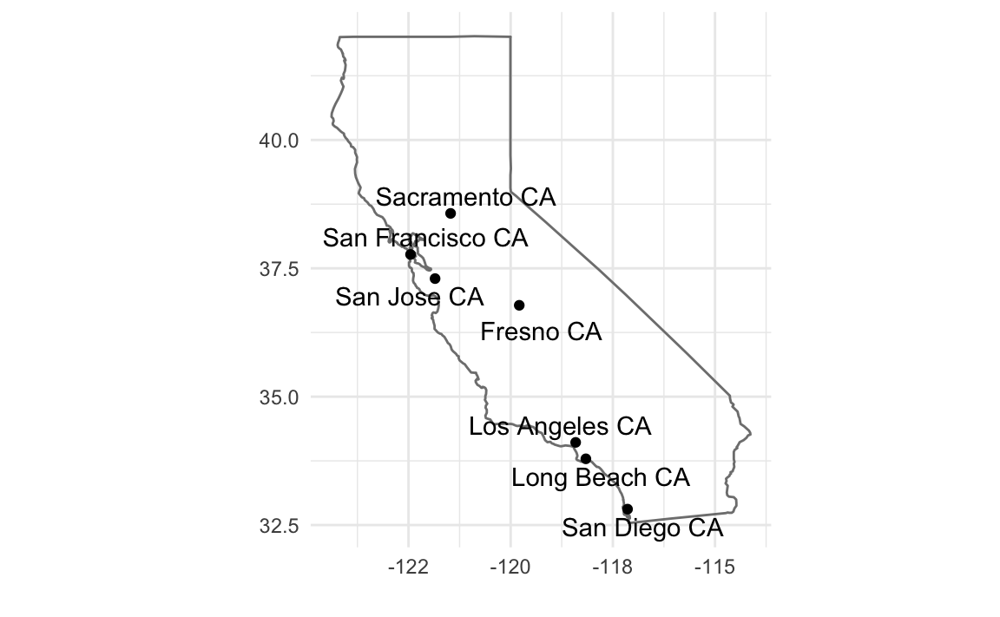
4.10.3 Colors in R
For more resources on using colors in R
R4DSchapter Graphics for Communication- ggplot2 book Chapter “Scales”
- Jenny Bryan Using colors in R
- Achim Zeileis, Kurt Hornik, Paul Murrell (2009). Escaping RGBland: Selecting Colors for Statistical Graphics. Computational Statistics & Data Analysis DOI
- colorspace vignette
- Maureen Stone Choosing Colors for Data Visualization
- ColorBrewer A website with a variety of palettes, primarily designed for maps, but also useful in data viz.
- Stephen Few Practical Rules for Using Color in Charts
- Why Should Engineers and Scientists by Worried About Color?
- A Better Default Colormap for Matplotlib A SciPy 2015 talk that describes how the viridis was created.
- Evaluation of Artery Visualizations for Heart Disease Diagnosis Using the wrong color scale can be deadly … literally.
- The python package matplotlib has a good discussion of colormaps.
- Peter Kovesi Good Color Maps: How to Design Them.
- See the viridis, ggthemes, dichromat, and pals packages for color palettes.
Use scale_identity for the color and alpha scales since the values of the variables are the values of the scale itself (the color names, and the alpha values).
ggplot(tibble(x = rep(1:4, each = 2),
y = x + rep(c(0, 0.2), times = 2),
colour = rep(c("black", "red"), each = 4),
alpha = c(1, 1, 0.5, 0.5, 1, 1, 0.5, 0.5)),
aes(x = x, y = y, colour = colour, alpha = alpha)) +
geom_point(size = 15) +
scale_color_identity() +
scale_alpha_identity() +
theme_bw() +
theme(panel.grid = element_blank())
4.10.4 United States Presidential Elections
data("pres08", package = "qss")
pres08 <- pres08 %>%
mutate(Dem = Obama / (Obama + McCain),
Rep = McCain / (Obama + McCain))ggplot() +
borders(database = "state", regions = "California", fill = "blue") +
coord_quickmap() +
theme_void()
cal_color <- filter(pres08, state == "CA") %>% {
rgb(red = .$Rep, green = 0, blue = .$Dem)
}
ggplot() +
borders(database = "state", regions = "California", fill = cal_color) +
coord_quickmap() +
theme_void()
# America as red and blue states
map(database = "state") # create a map
for (i in 1:nrow(pres08)) {
if ( (pres08$state[i] != "HI") & (pres08$state[i] != "AK") &
(pres08$state[i] != "DC")) {
map(database = "state", regions = pres08$state.name[i],
col = ifelse(pres08$Rep[i] > pres08$Dem[i], "red", "blue"),
fill = TRUE, add = TRUE)
}
}
## America as purple states
map(database = "state") # create a map
for (i in 1:nrow(pres08)) {
if ( (pres08$state[i] != "HI") & (pres08$state[i] != "AK") &
(pres08$state[i] != "DC")) {
map(database = "state", regions = pres08$state.name[i],
col = rgb(red = pres08$Rep[i], blue = pres08$Dem[i],
green = 0), fill = TRUE, add = TRUE)
}
}states <- map_data("state") %>%
left_join(mutate(pres08, state.name = str_to_lower(state.name)),
by = c("region" = "state.name")) %>%
# drops DC
filter(!is.na(EV)) %>%
mutate(party = if_else(Dem > Rep, "Dem", "Rep"),
color = map2_chr(Dem, Rep, ~ rgb(blue = .x, red = .y, green = 0)))
ggplot(states) +
geom_polygon(aes(group = group, x = long, y = lat,
fill = party)) +
coord_quickmap() +
scale_fill_manual(values = c("Rep" = "red", "Dem" = "blue")) +
theme_void() +
labs(x = "", y = "")
For plotting the purple states, I use since the color column contains the RGB values to use in the plot:
ggplot(states) +
geom_polygon(aes(group = group, x = long, y = lat,
fill = color)) +
coord_quickmap() +
scale_fill_identity() +
theme_void() +
labs(x = "", y = "")
However, plotting purple states is not a good data visualization. Even though the colors are a proportional mixture of red and blue, human visual perception doesn’t work that way.
The proportion of the democratic vote is best thought of a diverging scale with 0.5 is midpoint. And since the Democratic Party is associated with the color blue and the Republican Party is associated with the color red. The Color Brewer palette RdBu is an example:
ggplot(states) +
geom_polygon(aes(group = group, x = long, y = lat, fill = Dem)) +
scale_fill_distiller("% Obama", direction = 1, limits = c(0, 1), type = "div",
palette = "RdBu") +
coord_quickmap() +
theme_void() +
labs(x = "", y = "")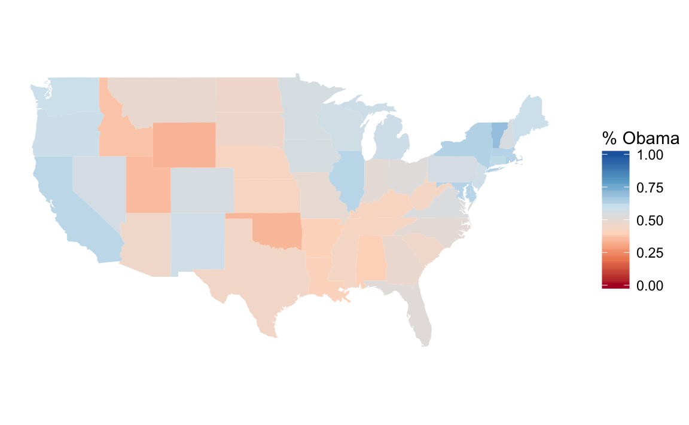
4.10.5 Expansion of Walmart
We don’t need to do the direct mapping since
data("walmart", package = "qss")
ggplot() +
borders(database = "state") +
geom_point(aes(x = long, y = lat, colour = type, size = size),
data = mutate(walmart,
size = if_else(type == "DistributionCenter", 2, 1)),
alpha = 1 / 3) +
coord_quickmap() +
scale_size_identity() +
guides(color = guide_legend(override.aes = list(alpha = 1))) +
theme_void()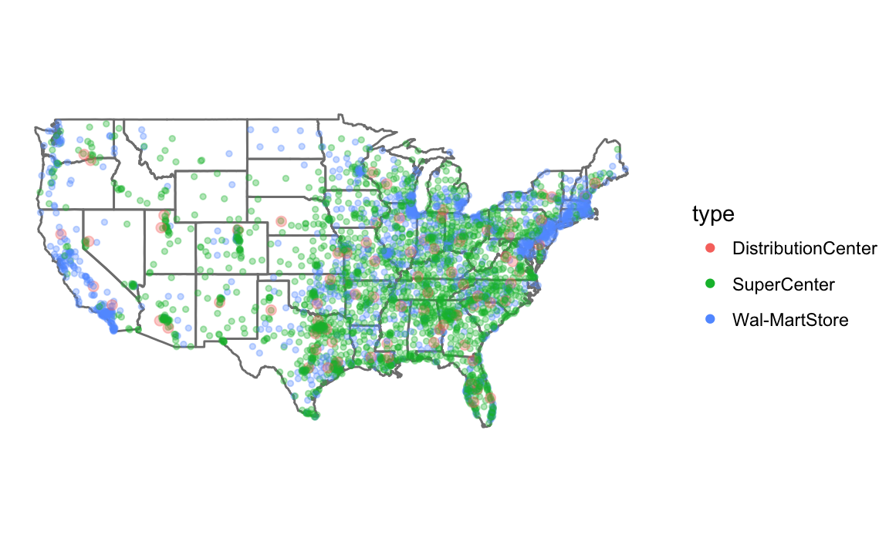 We don’t need to worry about colors since ggplot handles that. I use guides to so that the colors or not transparent in the legend (see R for Data Science chapterGraphics for communication).
To make a plot showing all Walmart stores opened up through that year, I write a function, that takes the year and dataset as parameters.
Since I am calling the function for its side effect (printing the plot) rather than the value it returns, I use the walk function rather than map. See R for Data Science, Chapter 21.8: Walk for more information.
map_walmart <- function(year, .data) {
.data <- filter(.data, opendate < make_date(year, 1, 1)) %>%
mutate(size = if_else(type == "DistributionCenter", 2, 1))
ggplot() +
borders(database = "state") +
geom_point(aes(x = long, y = lat, colour = type, size = size),
data = .data, alpha = 1 / 3) +
coord_quickmap() +
scale_size_identity() +
guides(color = guide_legend(override.aes = list(alpha = 1))) +
theme_void() +
ggtitle(year)
}
years <- c(1975, 1985, 1995, 2005)
walk(years, ~ print(map_walmart(.x, walmart)))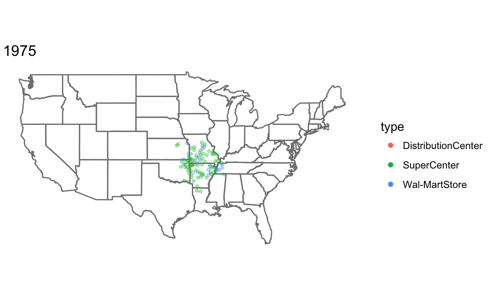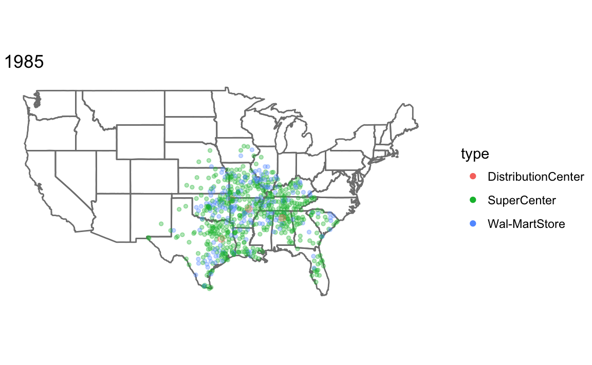 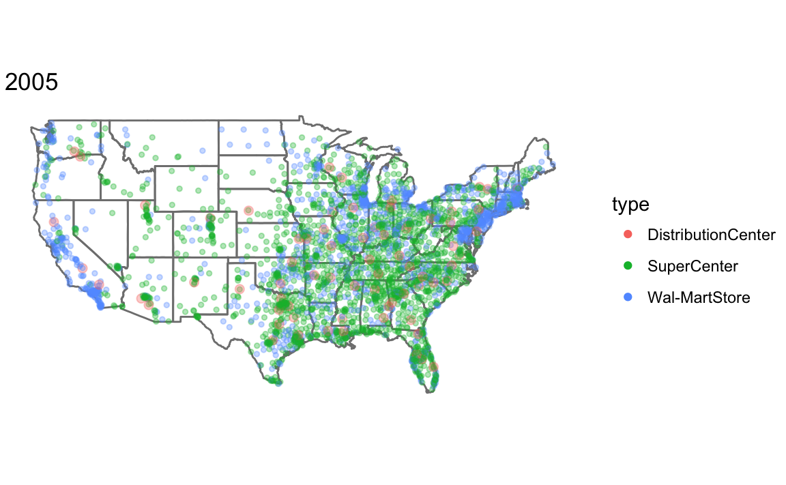
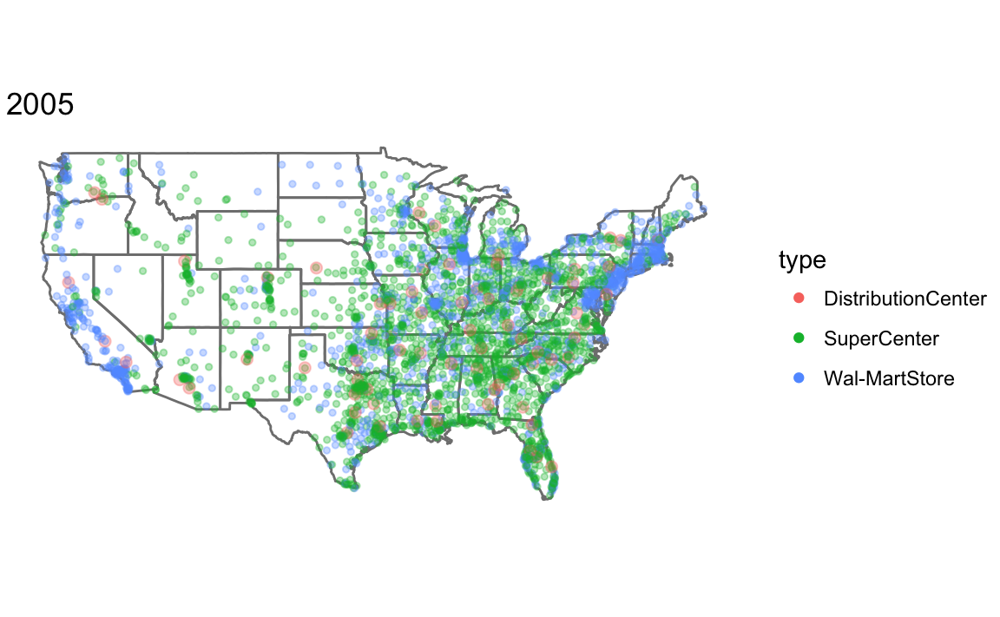
4.10.6 Animation in R
For easy animation with ggplot2, use the gganimate package. Note that the gganimate package is not on CRAN, so you have to install it with the devtools package:
install.packages("cowplot")
devtools::install_github("dgrtwo/animate")library("gganimate")An animation is a series of frames. The gganimate package works by adding a frame aesthetic to ggplots, and function will animate the plot.
I use frame = year(opendate) to have the animation use each year as a frame, and cumulative = TRUE so that the previous years are shown.
walmart_animated <-
ggplot() +
borders(database = "state") +
geom_point(aes(x = long, y = lat,
colour = type,
fill = type,
frame = year(opendate),
cumulative = TRUE),
data = walmart) +
coord_quickmap() +
theme_void()
gganimate(walmart_animated)
unnamed-chunk-18